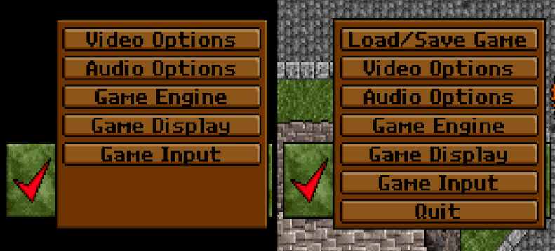
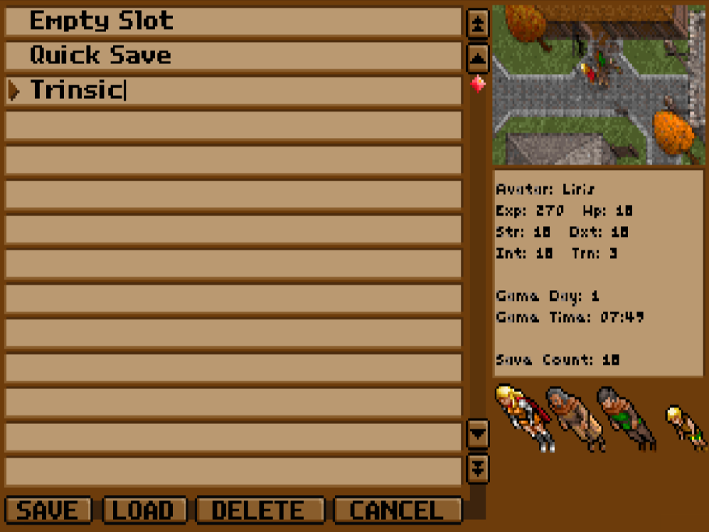
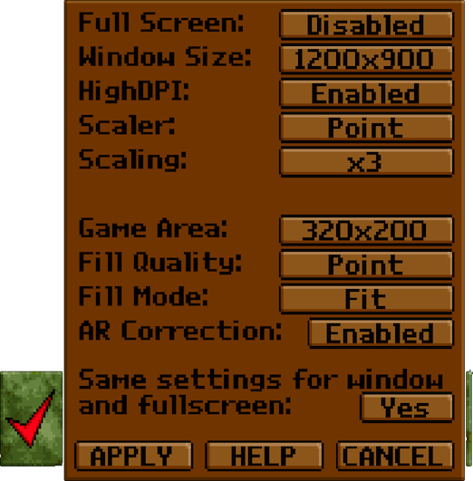
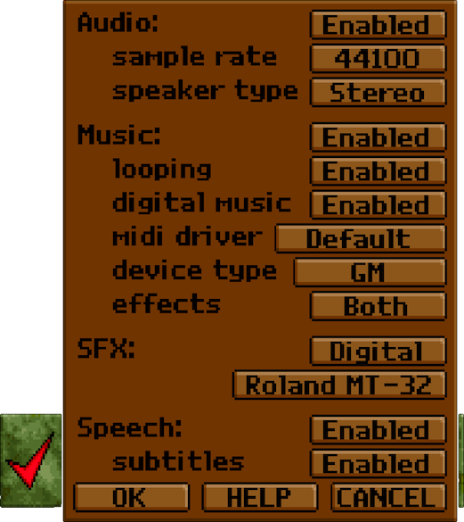
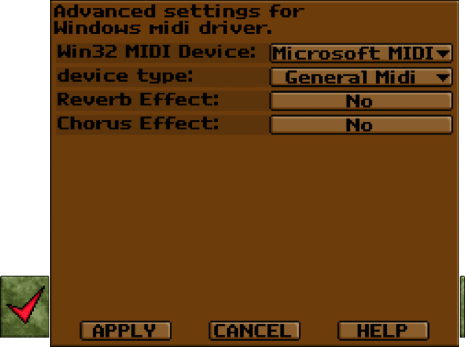
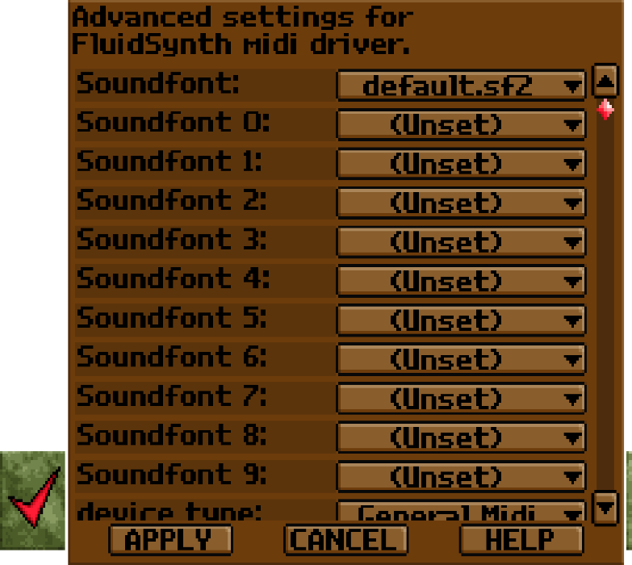
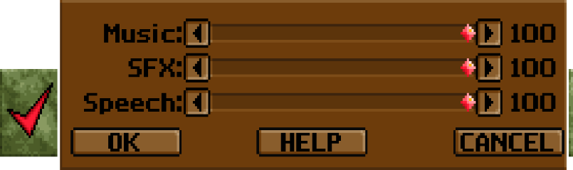
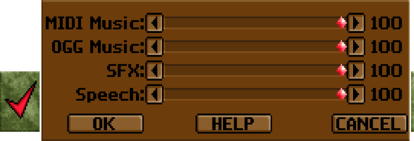
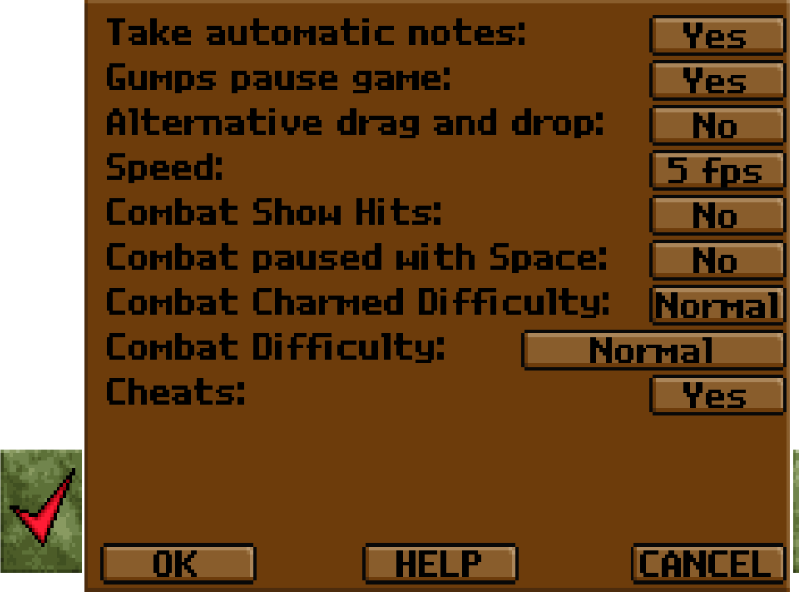
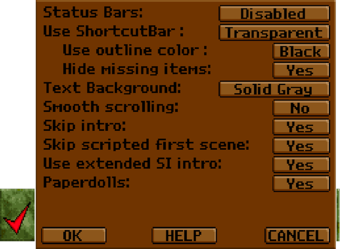

Exult - Documentation
last changed:
16 April 2025 (GMT)
The latest version of this document can be found
here
1. Introduction
1.1. Exult Version
1.2. What is Exult?
1.3. Terms we use in regard to Exult and Ultima VII
2. Configurations
2.1. Installation
2.2. Location of exult.cfg
2.3. Default game folders on macOS
2.4. Default game folders on Linux
2.5. Command line options
2.6. Error Log
3. Exult Setup and Game Menu
3.1. Access to the Exult Setup and Game menu
3.2. Load/Save Game
3.3. Video Options
3.4. Audio Options
3.5. Advanced Audio Settings
3.6. Volume Mixer
3.7. Game Engine
3.8. Game Display
3.9. Game Input
3.10. Quit
4. Audio
4.1. Music
4.2. MIDI Music
4.3. Abilities and limitations of the MIDI music engine
4.4. Windows MIDI Mapper
4.5. macOS CoreMidi device ID
4.6. Digital Music
4.7. Digital Wave Sound Effects
4.8. All-in-One Audio Data pack and installers
4.9. Installation of the digital music packs
4.10. Installation of the digital wave sound effects
4.11. Speech
4.12. Toggle Audio
4.13. Linux and Audio
5. Video
5.1. Resolution
5.2. Fill modes
5.3. Higher resolution is cheating
5.4. Scaler
6. Movement and Keys
6.1. Movement
6.2. Keyboard commands
6.3. Cheat keys
6.4. Map Editing keys
7. ShortcutBar, Notebook and Screenshots
7.1. ShortcutBar for single or double click actions
7.2. Using the Notebook
7.3. The automatic Notebook
7.4. Screenshots
8. Mods and Patches
8.1. Introduction to Mods and Patches
8.2. Installing Mods
8.3. Installing Patches
8.4. Adapting the location of Mods and Patches
8.5. Where to find the savegames of modded games
8.6. Exchanging Savegames between original games and Mods
8.7. Problems with case sensitive file systems (e.g. Linux)
9. iOS Guide
9.1. The port to iOS
9.2. Installing Exult on your iPhone/iPad
9.3. Installing the games on your iPhone/iPad
9.4. Installing sfx and digital music
9.5. iOS controls
9.6. iOS automatic saves
10. Android Guide
10.1. The port to Android
10.2. Installing Exult on your Android
10.3. The Exult Launcher on Android
10.4. Installing the games on your Android
10.5. Installing mods on Android
10.6. Installing sfx, digital music, MT32 ROMs and SoundFonts
10.7. Android controls
10.8. Android automatic saves
10.9. Android File Storage
11. The exult.cfg file
11.1. Settings in exult.cfg
11.2. Path-Settings
11.3. Path-Settings for Windows
11.4. Path-Settings for macOS
11.5. Path-Settings for Linux/Unix systems
11.6. Advanced Configuration: Using both the original and the Add-Ons
12. Installing the original Ultima VII games for use with Exult
12.1. Using GOG.com's installer for Windows
12.2. Using GOG.com's installer for macOS
12.3. Installing the CD-ROM versions of Ultima VII
12.4. Installing the floppy disks of BG/SI using DOSBox
12.5. Installing the floppy disks of the Add-Ons FoV/SS using DOSBox
12.6. Manual installation of the BG floppy disks
12.7. Manual installation of the SI floppy disks
12.8. Installing the floppy disks of BG/SI on Windows
12.9. Installing the floppy disks of the Add-Ons FoV/SS on Windows
12.10. Exult only needs one folder
13. Credits and Contact
13.1. Thanks
13.2. Contacting us
14. Changes to the Documentation
14.1. - 16 April 2025
14.2. - 20 March 2025
14.3. - 19 January 2025
14.4. - 06 January 2025
14.5. - 03 July 2024
14.6. - 25 April 2024
14.7. - 23 April 2024
14.8. older changes
| 1. Introduction |
|---|
| |
| 1.1. Exult Version |
|
This documentation is for the snapshot version of Exult.
If you have another Exult version, its documentation can be found where you installed the release.
|
| |
| 1.2. What is Exult? |
|
Ultima VII, an RPG from the early 1990's, still has a huge following. But,
being a DOS game with a very nonstandard memory manager, it is difficult
to run it on the latest computers. Exult is a project that created
an Ultima VII game engine that runs on modern operating systems, capable of
using the data and graphics files that come with the game.
Exult is written in C++ and runs on, at least, Linux, macOS and Windows
using the SDL2 library to make porting to other platforms relatively easy.
The current version supports all of "Ultima VII: The Black Gate"
and "Ultima VII - Part 2: The Serpent Isle", allowing you to
finish both games. This is only possible due to the work done
by other fans who have decoded the various Ultima VII data files,
especially Gary Thompson, Maxim Shatskih, Jakob Schonberg, and Wouter Dijkslag.
Exult aims to let those people who own Ultima VII (copyright 1993)
play the game on modern hardware, in as close to (or perhaps even surpassing)
its original splendor as is possible. You need to own
"Ultima VII: The Black Gate" and/or
"Ultima VII - Part 2: The Serpent Isle" and optionally
the add-ons (not required to run) in order to use Exult,
and we encourage you to buy a legal copy.
|
| |
| 1.3. Terms we use in regard to Exult and Ultima VII |
|
We are using many terms in this documentation, the FAQ and other documentation
files that people may have difficulties to understand. Here we will try to give
some explanations.
-
BG, SI, FoV
or SS:
we refer to "Ultima VII: The Black Gate" as BG and to
"Ultima VII - Part 2: The Serpent Isle"
as SI. The add-ons "Forge of Virtue" and "Silver Seed" are
called FoV and SS.
-
eggs:
these are trip-wires that can cause monsters to spawn, execute scripts, play
music, change weather, trigger traps or teleport when you get near them.
-
flex files:
also known as flexes, these are used by the original to store the data files.
Also when you choose to not use compressed save games (see save_compression_level in
11.1.) our savegames are also 'flexed'.
-
gumps:
the windows used in the game interface for containers, characters, menus, etc..
-
paperdoll:
when pressing 'i' you get the inventory display. It's the picture of your
characters body (or the bodies of your party members) onto which you can drag all
kinds of equipment. The way this is displayed in SI is commonly called
paperdoll. We integrated this for BG as well.
(see FAQ).
-
shapes:
shape files are the format used for storage of all graphics elements (from UI buttons
to terrain features) of the games Exult supports. Shapes may contain one or more
frames (a frame is a single image).
-
snapshot:
see FAQ.
Please note that our documentation usually refers to the latest snapshot.
-
usecode:
that's the scripting language that drives all of Ultima VII (conversations, objects...).
-
Exult data folder:
that's the folder where Exult stores its data files (exult.flx, exult_bg.flx and
exult_si.flx).
-
gamename
name of games that are set in exult.cfg's <game>, Exult knows by default
the gamenames blackgate, forgeofvirtue, serpentisle,
silverseed and serpentbeta.
|
| 2. Configurations |
|---|
| |
| 2.1. Installation |
- First you need to get Ultima VII. Either you own it already, or
you buy it somewhere.
- You need an installed version of Ultima VII to run Exult with.
At 12. Installing the original Ultima VII games for use with Exult
we have a guide on how to install the original games or use the version offered by GOG.com.
- Download Exult from our
download page
and install it. The Windows version comes with an installer that asks for the
location of both BG and SI. If you entered the correct location or you are using the default
games locations on Linux systems and macOS the next two steps are not necessary.
- Now run exult (exult.exe on Windows)
and quit it immediately.
- Edit the configuration file with a text editor (e.g. on Windows use Notepad)
and enter the correct paths for the game folders - see 11.1.
for details
- Run exult and enjoy the game :-)
Word of advice: Don't mix the files from BG and SI.
|
| |
| 2.2. Location of exult.cfg |
|
Most of the options in Exult can be changed from the Setup
menu when you run Exult or via the Game Options menu. Exult stores these
changes in a configuration file. Except for changing paths to the games you
shouldn't need to edit the file. Very few options need manual editing.
However if you need to edit the configuration file, it is extensively explained
in 11. The exult.cfg file.
The location of the file varies depending on the Operating System and in the
case of Windows OS it also depends on the version of Windows.
- On Linux systems you can expect to find it in $HOME/.exult.cfg, or
in $HOME/.var/apps/info.exult.exult/config/exult.cfg if using the
Flatpak package
- macOS saves it to ~/Library/Preferences/exult.cfg
- Windows (7, 8, 10, 11) save exult.cfg to LOCAL_APPDATA\Exult,
but on these this translates to C:\Users\YourUsername\AppData\Local\Exult
- On all supported Windows versions you can quickly access this folder by executing
shell:Local AppData\Exult
in the 'Quick Access' of Explorer.
|
| |
| 2.3. Default game folders on macOS |
|
On macOS Exult uses a couple of different folders to follow Apple's guidelines:
Note that on macOS Exult looks in a default folder (/Library/Application Support/Exult/data)
for Exult's data and the files of the games. On purpose this folder is not in the User-only
space, so other users on the same mac can play the games and use the Exult.app.
But you will need to follow our gamename standard when you name the game
folders, see 1.3. Terms we use in regard to Exult and Ultima VII, otherwise Exult will not find them there.
Another specialty on macOS is that the Exult.app comes bundled with the Exult data, so
Exult will first use the data in the Exult.app and then use the data in the default folder
or the location written down in exult.cfg's <data_path>.
This means that you can copy the sfx files and the digital music folder into the app bundle
(Exult.app/Contents/Resources/data) and Exult will automatically use these.
Example: User named FooBar on macOS 14. BG is installed to
/Library/Application Support/Exult/blackgate and SI is installed to
/Library/Application Support/Exult/serpentisle.
The app Exult.app is saved to /Applications. When you run Exult it will automatically
recognize that BG and SI are installed. You do not need to edit exult.cfg, which is saved
to /Users/FooBar/Library/Preferences/exult.cfg.
When you save a game in BG the savegame will be saved to
/Users/FooBar/Library/Application Support/exult/blackgate/,
for SI to Users/FooBar/Library/Application Support/exult/serpentisle/.
If you install for example the keyring mod, you copy the contents of the Keyring.zip to
/Library/Application Support/Exult/blackgate/mods. When you save a game with the
Keyring mod, this savegame will be found in
/Users/FooBar/Library/Application Support/exult/blackgate/mods/keyring/.
Please be aware of the difference between /Library/... and ~/Library/....
In the root of your macOS system hard drive is the folder /Library. The folder
~/Library is a sub folder of your home folder. If your username is foobar then the folder
~/Library is located at /Users/foobar/Library on your hard drive.
On macOS the folder ~/Library is hidden by default. To access it open Finder,
click on the menu item 'Go' while pressing 'Option/Alt' and 'Library' will be an option
to click on.
If you followed all the instructions and Exult still won't recognize the games, you can try
deleting exult.cfg in ~/Library/Preferences and then start Exult to generate
a new cfg file.
At 11.4. Path-Settings for macOS you can see an exult.cfg example with the macOS defaults.
|
| |
| 2.4. Default game folders on Linux |
|
As on macOS, Exult uses a default path on Linux systems for its data folder and the game files.
Unless you configure custom paths in exult.cfg, Exult will automatically look for
the game data files in /usr/local/share/exult, or in the case of the the
Flatpak package, in
$HOME/.var/app/info.exult.exult/data/.
But you will need to follow our gamename standard when you name the game
folders, see 1.3. Terms we use in regard to Exult and Ultima VII, otherwise Exult will not find them there.
Example: User named FooBar on Ubuntu. BG is installed to
/usr/local/share/exult/blackgate and SI is installed to
/usr/local/share/exult/serpentisle.
When you run Exult it will automatically recognize that BG and SI are installed. You do not
need to edit exult.cfg, which is saved to $HOME/.exult.cfg.
When you save a game in BG the savegame will be saved to $HOME/.exult/blackgate/,
for SI to $HOME/.exult/serpentisle/.
If you install for example the keyring mod, you copy the contents of the Keyring.zip to
/usr/local/share/Exult/blackgate/mods. When you save a game with the Keyring mod,
this savegame will be found in $HOME/.exult/blackgate/mods/keyring/.
At 11.5. Path-Settings for Linux/Unix systems you can see an exult.cfg example with the Linux defaults.
|
| |
| 2.5. Command line options |
|
Exult offers some command line options:
- '-h' or '--help'
Shows all the command line parameters in stderr (stderr.txt on Windows systems).
- '-v' or '--version'
Shows version information in stderr.
- '-c configfile'
Specify alternate config file (relative or absolute paths work).
- '-p'
Portable option for Windows only. Exult will read cfg file from the folder it got
installed to (or make one) and will assume the games to be in the gamename subfolders
(see 1.3.).
For example if Exult got installed to E:\Exult, a BG game will be expected
to be in E:\Exult\blackgate. Savegames will also be saved in these folders.
Be careful that you have actually writing permissions in the Exult folder or
this will fail.
- '--bg'
Starts the game with the Black Gate menu (prefers original game).
- '--fov'
Starts the game with the menu of the Black Gate with Forge of Virtue expansion.
Only useful if you have FoV added as described at 11.6.,
otherwise it will just work like the command '--bg'.
- '--si'
Starts the game with the Serpent Isle menu (prefers original game).
- '--ss'
Starts the game with the menu of the Serpent Isle with Silver Seed expansion.
Only useful if you have SS added as described at 11.6.,
otherwise it will just work like the command '--si'.
- '--sib'
Starts the game with the menu of the Serpent Isle beta version.
- '--nomenu'
Skips game menu.
- '--game gamename'
Loads a game specified in exult.cfg when there are other games made
with Exult Studio.
- '--mod modname'
Must be used together with '--bg', '--si', '--fov',
'--ss', '--sib' or '--game gamename'; runs the specified
game using the mod with title equal to 'modname'. 'modname' is the
name of the mod cfg file (e.g. keyring.cfg means 'modname' is 'keyring'.
- '--buildmap x'
x = 0 shows all roofs, x = 2 pops them all.
Makes 144 2048x2048 pixels screenshots of the game map which you will need to piece
together. The screenshots are numbered according to the
ifix/ireg map.
By default the screenshots are PNG files. In the unlikely case that Exult was compiled
without libpng support, buildmap will output PCX files.
Exult is required to be run in windowed mode and you get the best map if you
started a new game before you build the map.
You need to specify a game, either by '--bg' (or '--si',
'--fov', '--ss', '--sib') or with the
'--game'/'--mod' option.
- '--mapnum'
This must be used with '--buildmap' to select a map in multimap games or mods.
- '--nocrc'
Exult doesn't start when the crc of the
exult*.flx files in the data folder isn't the same it got compiled with.
This parameter lets the game start nevertheless. Don't try this if you
don't know what you are doing as it is likely to crash Exult.
- '--verify-files'
Verifies that the files in static dir are not corrupt.
Only valid if used together with '--bg', '--si', '--fov',
'--ss', '--sib' or '--game gamename'; you cannot specify a mod with this flag.
- '--edit'
Start in map-edit mode. This will also load Exult Studio when the game is started.
- '--write-xml'
Write patch/exultgame.xml. Only useful for game editing.
- '--reset-video'
resets Exult's video settings to the default values. Very helpful when Exult
isn't playable anymore because of wrong settings.
|
| |
| 2.6. Error Log |
-
Windows:
Exult generates the files stdout.txt and stderr.txt.
These may give you some idea of what is going on
under the hood. When Exult suddenly quits, sometimes
these files can help.
You can find these files in the folder where exult.cfg is
located (see 2.2.)
-
Linux/UNIX:
the above mentioned logs are shown in the console from which Exult
is started.
./exult >&$HOME/exult_log.txt
will send both stderr and stdout to the file named exult_log.txt
in your $HOME folder.
-
macOS:
Similar to Linux, you need to start Exult from the Terminal.app to see the
logs or redirect them to a text file. Use
/Applications/Exult.app/Contents/MacOS/exult >&$HOME/exult_log.txt
to find the file named exult_log.txt in your $HOME folder.
|
| 3. Exult Setup and Game Menu |
|---|
| |
|
|
The Exult Setup and Game menu share mostly the same options, except for
the option to 'Save/Load games' and to 'Quit' the game, which are only available
in the Game menu once you loaded a game.
Exult Setup can only be opened on the Exult menu by selecting the 'Setup' option.
And you can access the Game menu either by pressing the disk icon in the Avatar's
inventory screen or by pressing 'ESC'.
The following options are available for the Exult Setup menu and the Game menu:

There is a HELP button on most options that will open your default browser at the
online version of this documentation.
|
| |
|
|
This one is pretty straightforward. You can load and save a game, delete a game and
view some information of a save game on the right side (a screenshot and some stats).
If you have a wheel mouse you can scroll one line up/down by using the wheel. Pressing
'Alt' while using the wheel scrolls by pages.
Pressing Cancel exits the Load/Save options.
This is only available in game through the Game menu.

|
| |
| 3.3. Video Options |
|
In this option screen you are able to determine how Exult displays the game.

-
Full Screen
enable or disable running Exult in full screen.
-
Window Size
lets you choose between various resolutions determined by the fullscreen resolutions
your system reports as supported. If you want other resolutions edit
exult.cfg outlined in 11.1. Settings in exult.cfg.
-
Scaler
lets you choose your favorite scaling engine. Also look at 5.4. Scaler
for an explanation.
-
Scaling
choose between 1x up to 8x. Further explanation in 5.4. Scaler.
For scalers that have a default only scaling (e.g. 2xSaI) this option will be hidden.
-
Game Area
the size of your game viewing area in the Exult window. You can choose between the
original default resolution of '320x200' or 'Auto' which tries to set the best viewing
area for the chosen resolution.
-
Fill Quality
the scaler used by the different fill modes. You can chose between Point and Bilinear.
-
Fill Mode
Different modes on how to display the Game Area in the Exult window size.
Please see 5.2. Fill modes.
-
AR Correction
Aspect Ratio Correction for the fill modes 'Fit' and 'Centre'.
-
Same setting for window and fullscreen
When you disable this you can select different settings for window and fullscreen mode by changing
the settings while being in either mode.
-
APPLY/HELP/CANCEL
Checks whether your changes can cause problems, applies your changes and gives you a countdown
to confirm that the new settings are working correctly. If you don't want to apply your changes,
click CANCEL.
|
| |
| 3.4. Audio Options |
|
Look at 4. Audio to see explanation on the settings.

-
Volume Mixer
opens our Volume Mixer, see see 3.6..
-
Audio
Enable or disable all Audio in Exult.
-
sample rate
changes the sample rate between 11025 and 48000.
-
speaker type
toggle between mono and stereo.
-
Music
Enable or disable music.
-
looping
Toggles several ways the music can loop, see 4.1. Music.
-
digital music
Enables/disables Digital Music.
-
MIDI driver
choose between different drivers for MIDI, see 4.2..
-
device type
choose between different device types for MIDI music, see 4.2..
-
effects
alters the way the MIDI is played. Choose between Reverb, Chorus,
Both (Reverb and Chorus) or disable it.
-
SFX
Enable or disable digital sound effects.
-
Pack
choose between our standard SFX packs, Roland MT32 and Soundblaster, see 4.7..
This option is not available in the Exult Setup.
-
Speech
Options on whether you hear the voices of the Guardian or the Great Earth Serpent, also toggles subtitles.
-
APPLY/HELP/CANCEL
Applies your changes without closing the Audio Options. If you don't want to apply your changes,
click CANCEL.
|
| |
| 3.5. Advanced Audio Settings |
|
Some MIDI drivers additional settings that can be accessed via the button
SETTINGS of the Audio Options.
Most allow setting the MIDI conversion, reverb and chorus, but for some drivers that are
able to make use of custom soundfonts, are able to select one.

FluidSynth allows stacking soundfonts (see 4.2. MIDI Music) and you can
select a different one for each of the 10 slots.

|
| |
| 3.6. Volume Mixer |
|
Our Volume Mixer allows changing the volume of music, sfx and speech independently.
Our different midi drivers each save their own volume.

When you have enabled digital music and and another midi driver you can set
both volumes for music.

|
| |
| 3.7. Game Engine |
|

-
Take automatic Notes
Toggle writing automatic notes to the notebook - see 7.3. The automatic Notebook.
-
Gumps pause games
In the original the game got paused when Gumps were shown. Enable/disable it.
-
Alternative drag and drop
When enabled dropping a stack of items (coins, bolts...) will drop the whole stack without
asking for confirmation of the amount of items to drop. Hold 'Ctrl' while dropping
if you need to split a stack.
-
Speed
if Exult seems too fast lower this setting. If it seems to sluggish raising
this setting may help.
-
Combat options
As many people think that the U7 combat engine is far too easy, too hard or
just can't stand the real-time-combat we put in some options to make combat more
interesting:
-
Combat Show Hits
With this enabled you can see the hit points of NPCs in brackets after their name when
you left-click on them.
-
Combat paused with Space
choose between Original and SpacePauses. SpacePauses gives you a little more control of
combat. When you hit space the game pauses and you can direct a party member by
right-clicking, then clicking on a target to attack. Or change weapons, choose a
favorite spell.
-
Combat Charmed difficulty
choose between Normal and Hard. With Normal the Avatar can't be charmed. The original game allowed
him to be charmed though that only highlighted him as charmed and the charmed status icon showed
but you could control him as usual.
Hard will neither allow the player to control charmed party members, including the Avatar, nor
access the inventory of a charmed party member. But you can still manipulate objects that are not
in the charmed party members possessions even if the Avatar is the one who is charmed. Charmed
party members will continue to attack, even if the player ends combat.
-
Combat Difficulty
Ranges from Easiest (-3) to Hardest (3). It affects the chance of a hit, and
the HP that is lost if a hit occurs.
-
Cheats
Enables or disables all the cheats that we implemented in Exult.
See 6.3. Cheat keys what those cheats are.
|
| |
| 3.8. Game Display |
|

-
Status Bars
You can either disable the status bars or choose its position on
the bottom of the screen (left, middle, right).
-
Use ShortcutBar
Toggle the ShortcutBar or make it transparent when on the map -
see 7.1. ShortcutBar for single or double click actions.
-
Use outline color
Choose a the color of the outline around the ShortcutBar buttons or disable it - see
7.1. ShortcutBar for single or double click actions.
-
Hide missing items
hides ShortcutBar items the party doesn't have, otherwise missing items are greyed out -
see 7.1. ShortcutBar for single or double click actions.
-
Text Background
shows a tinted background behind text in conversations to make it easier to read.
Either disable it or choose between the colors purple, orange, light gray, green,
yellow, pale blue, dark green, red, bright white, dark gray and white.
-
Smooth scrolling
Disabled/25%/50%/75%/100% percentage of how smooth the game scrolls when the avatar
moves. When disabled Exult uses the 'jerky' scrolling of the original game.
-
Skip intro
When enabled you don't have to watch the splash screen and intro when you select a game
from the Exult menu.
-
Skip scripted first scene
When you start a new game of BG the game starts with a scripted scene during which
you can't move the Avatar. Enable this to skip this part but only do this
if you have already played the game and have seen this scene.
-
Paperdolls
only available in Black Gate and only if you have
Serpent Isle installed as well. Enables or disable Paperdolls
(inventory screen) in the style of Serpent Isle.
-
Use extended SI intro
To fit the intro of SI onto the constraints of floppy disks, it was cut and made
much simpler than originally envisioned by Denis Loubet. We have restored the
intro and made it possible to watch it.
|
| |
| 3.9. Game Input |
|

-
Doubleclick closes gumps
pretty straightforward, right?
-
Right click closes gumps
the same but different.
-
Pathfind with Right Click
Right-clicking on a spot makes the avatar walk to it. Default is a double click
but you can set it to a single one or disable it.
-
Scroll game view with mouse
When cheats are enabled you can scroll the game view with the scroll wheel of the mouse,
when you hold down the 'Alt' you will scroll sideways (to the west or to the east).
-
Use middle mouse button
In the normal game, the middle mouse button activates the target-function
(which could also be accomplished by pressing 't'). For modal gumps,
the middle mouse acts as 'return', the right button as 'escape', so you can now
for example accept the default slider value by just pressing the middle button.
The escape function is also available during most other actions like selecting
a target or conversations. Enable or disable it.
-
Fullscreen Fast Mouse
makes the mouse cursor move faster in full screen modes. Enable or disable it.
-
Item helper menu
Enabling this will pop up a menu on screen of objects you can click on and once you select one,
it gives you further options on how to interact with the object. Only on iOS enabled by default.
-
D-Pad screen location
On iOS we display a virtual D-Pad to move the Avatar with your finger (thumb). This toggles and
selects the side of the screen this D-Pad is displayed on. For now this is only enabled on iOS
-
Pathfind with Long touch
When you click or touch for a little while the Avatar will move to this location if it's
possible to move there. By default only enabled on iOS.
|
| |
| 3.10. Quit |
|
Exits Exult. This option is only available in the in-game menu.
On iOS and Android this is not available (both don't allow you to quit apps directly).
|
| 4. Audio |
|---|
| |
| 4.1. Music |
|
There are three general ways that music is played in Exult. One is using MIDI, which
plays the music through any MIDI device, software synthesizers (TiMidity,FluidSynth) or
even MIDI device emulators like Munt MT-32 Emulator (or Exult's built-in MT32Emu).
Another way is Digital Music encoded into OGG (similar to MP3) which was recorded
directly from a Roland MT-32.
The third option is FMOpl which emulates Opl2/Adlib.
The MIDI files are converted on-the-fly from the original Ultima VII MT-32 files to
General MIDI format so that they will be playable on modern General MIDI and
General MIDI/GS supporting sound cards.
The Music driver options can be changed in the in-game menu that you open by hitting
'ESC'.
There you can enable Digital Music and change the MIDI driver, through which you can
also select the FMOpl emulation. When you enable Digital Music, it takes precedence over
the MIDI driver.
Exult allows changing of how the games' music loops.
-
never
disables music looping entirely.
-
endless
lopping music will not stop until a new music piece is being played.
-
auto
Music will loop but music started by a jukebox egg will stop looping when the avatar
is too far away. The music will play through to the end of the track.
-
limited
same as auto but music will immediately stop when too far from the egg instead of
playing through to the end.
|
| |
| 4.2. MIDI Music |
|
The MIDI driver can be changed to:
-
Default
This setting utilizes the FMOpl driver.
-
FMOPL
This is a Software FM Synthesizer (also known as a emulated Opl2/Adlib).
-
TiMidity
is a software synthesizer that can play MIDI files without a hardware synthesizer.
You can install TiMidity on all major Operating systems. You need to place tmidity.cfg
into the same folder where the Exult executable is installed to, otherwise TiMidity
will not work. On linux systems it needs to be in ~/.exult.
-
FluidSynth
is another software synthesizer, which uses SoundFont 2 technology without need for a
SoundFont-compatible sound card. It is available for many Operating Systems and in contrast
to TiMidity still actively developed.
To use FluidSynth you just need to copy a Soundfont file into the data and select it in the
3.5. Advanced Audio Settings.
Exult supports FluidSynth's SoundFont stack. SoundFonts can be selected in the
3.5. Advanced Audio Settings.
FluidSynth Documentation:
The loaded SoundFonts are treated as a stack, where each new loaded SoundFont is
placed at the top of the stack. When selecting presets by bank and program numbers,
SoundFonts are searched beginning at the top of the stack. In the case where there are
presets in different SoundFonts with identical bank and program numbers, the preset from
the most recently loaded SoundFont is used.
As a lightweight alternative to FluidSynth, Exult can be compiled against
FluidLite.
-
MT32Emu
Roland MT32 emulation requires either the ROM set 'MT32_CONTROL.ROM' and 'MT32_PCM.ROM' or
the ROM set 'CM32L_CONTROL.ROM' and 'CM32L_PCM.ROM' in the Exult data folder.
If both sets are present the CM32L ROM-set will be used.
On case sensitive Operating Systems these files have to be saved in uppercase.
For the Flatpak package
on Linux, these should be stored in $HOME/.var/app/info.exult.exult/data/mt32emu/.
-
Windows
Using the Windows MIDI driver.
-
CoreAudio
uses XMIDI on macOS and iOS. You can use a different SoundFont than macOS' default by copying a
Soundfont file into the data and select it in the 3.5. Advanced Audio Settings.
On iOS there is no default SoundFont thus you have to provide one yourself.
-
CoreMIDI
on macOS this MIDI driver allows using a real MIDI device like a Roland MT32 or software
MIDI devices like Munt MT-32 Emulator. If you have more than one MIDI device you can choose the
the device in the 3.5. Advanced Audio Settings.
On iOS you can use a real device through an USB-to-MIDI adapter that is connected to the
Lightning or USB-C port of the iOS device.
-
Alsa
uses ALSA on Linux systems. If your ALSA port is not on 65:0 you need to change
<config><audio><midi><alsa_port> in the exult.cfg.
-
UnixSeqDevice
Linux systems write to special symbolic file, default '/dev/sequencer'. This can be
changed at <config><audio><midi><unixseqdevice> in the exult.cfg.
Because of size constraints we abbreviated it to UnixSeq in the
3.4..
For drivers that use a real or system MIDI device, the MIDI conversion can be changed to:
-
Real MT32
This option will output the music with nothing changed. Because
the mapping will be for MT32s you should only use this option if
you have a MT32 compatible device. With this option Exult will
also send SysEx messages to the Roland MT32 display, which are nice
to watch when you have such a device.
-
GM
This will convert the MT32 patches to standard General MIDI patches.
Conversion is fairly accurate but some instruments may be different.
-
GS
This will convert the MT32 patches to their equivalent GS patches. This
will be a more accurate conversion that straight gm since more of the
MT32 patches are in the GS set. However, not all MIDI devices will
support this mode.
-
GS127
This option is for MIDI devices that have a MT32 patch bank installed
in Bank 127. Some GS implementation have this, some don't. Only use
this if you know that you have a MT32 implementation on Bank 127.
-
Fake MT32
This is for MIDI devices that behave like a MT32 but don't support
SysEx messages. Use that option if you have a SoundFont or similar loaded
for your sound card (or software synth such as FluidSynth) that contains
the MT32 capital tones but the device can't be reprogrammed using MT32
SysEx commands by Exult.
NOTE: Currently the conversion to GS and GS127 is not finished and
the notes are only mapped to General MIDI.
|
| |
| 4.3. Abilities and limitations of the MIDI music engine |
|
Due to the way the class was constructed input can be in either .mid, .rmi or
the Miles Sound System .xmi format. There are no limitations to the types of
.mid and .rmi supported. They can be Type 0, 1 and the rarely seen type 2. The
loading routine is also fairly lenient of erroneous XMIDI files that do not
have correct XMIDI headers.
During the development of the XMIDI class it was found that certain .xmi files
in Serpent Isle had the first patch changed after the first note. The
converter will attempt to correct these errors. However it may cause problems
with some MIDI files. Currently this can not be disabled and may change in the
future.
|
| |
| 4.4. Windows MIDI Mapper |
|
You can tell Exult which MIDI device it should use. This is useful if you
want Exult to use a different MIDI device than the default Windows device
(like an MT-32).
To do this start Exult, on the menu choose 'Exit'. Now open the file stdout.txt
in the folder where exult.cfg is located (see 2.2.).
You will see a listing of the MIDI devices.
For example with an SB Live! in Win2k it will look like this:
4 Midi Devices Detected
Listing midi devices:
-1: Microsoft MIDI-Mapper
0: A: SB Live! MIDI Synth
1: B: SB Live! MIDI Synth
2: SB Live! MIDI UART
By default Exult uses the Microsoft MIDI-Mapper (which uses the device you choose
in the Windows Multimedia Properties).
To change the MIDI Device open exult.cfg and change
| <config> |
|
| <audio> |
|
| <midi> |
|
| <win32_device> |
|
|
-1
|
| </win32_device> |
with the device you want to use.
|
| |
| 4.5. macOS CoreMidi device ID |
|
Similar to the above Windows MIDI mapper you can tell Exult on macOS which MIDI device
it should use. By default Exult uses macOS' CoreAudio device to output MIDI music. If you
have a real MIDI device (e.g. Roland MT32) or another software MIDI device (e.g. Munt MT-32 Emulator)
you want to use, you will need to select the CoreMidi MIDI driver.
CoreMidi uses by default the MIDI device with the first device ID (0), if you have more than
one device you will need to learn the device IDs first and then set it in exult.cfg.
To do this you will need to start Exult in a special way:
right click on the Exult.app, select 'Show Package Contents' which will show you the folder/file
structure of the Exult.app. Doubleclick on 'Contents', doubleclick on MacOS, doubleclick on exult.
Terminal.app will open a window and will show you all kind of output while Exult will also start. In
Exult click on setup and in the Audio settings select the CoreMidi driver (make sure to disable
digital music).
In the Terminal.app window you should now see a listing of the MIDI devices which could look like this:
Trying config specified Midi driver: `CoreMidi'
CoreMidi driver found 4 destinations:
0: USB Midi Cable
1: uMIDI/O22 Port 1
2: uMIDI/O22 Port 2
3: Mt32EmuPort
By default Exult uses the first device with the device ID 0, in this case 'USB Midi Cable'.
To change the MIDI Device open exult.cfg and change
| <config> |
|
| <audio> |
|
| <midi> |
|
| <coremidi_device> |
|
|
0
|
| </coremidi_device> |
with the device ID of the device you want to use.
|
| |
| 4.6. Digital Music |
|
Exult needs the Digital Music pack to play Digital Music in the game. The music
pack contains music for both Black Gate and Serpent Isle, encoded in high quality
OGG format. Simon Quinn recorded the current Digital Music pack on an original
Roland MT-32 and with this you will experience the music as it would be heard with
the original game.
Digital Music should work on any platform that supports digital sound and does not
use any MIDI, so it is also a good option for platforms with no MIDI support.
Additionally, Digital Music supports a number of background atmospheric SFX tracks
that are played when no music is playing. These consist of wind, bird etc effects
outside and other sound effects when inside a dungeon. These SFX tracks are not
available when using MIDI as they play Roland MT-32 specific voices that cannot
be mapped to GM/GS. These SFX tracks do not play when the music is switched off.
The digital music pack seems to have two issue, though, some tracks seem to have
been recorded at lower volume than the others. Also, since both the digital music
and the sound effects are played by the Wave / PCM of your sound card, you can no
longer have a different volume for music and sound effects.
|
| |
| 4.7. Digital Wave Sound Effects |
|
Exult needs the so called SFX packs to enable sound effects for Ultima VII.
You have to download separate packs for each game as order of the SFX in BG
and SI varies a bit and otherwise will sound odd. However there is a little
issue with SFX playback in SI: In combat the SFX may be a little wrong as we
still haven't figured out all the data in the 'weapons.dat'.
Also Exult doesn't yet playback all the SFX that the original did.
|
| |
| 4.8. All-in-One Audio Data pack and installers |
|
We've combined all the audio data we offer, Digital Music and Digital Wave
Sound Effects, into an all-in-one pack which saves you downloading several
smaller zip files. You can download a zip file for manual installation or
an installer for either Windows or macOS. Chose the one you want
to use on our
download page.
The Windows installer for Exult gives you the option to download and
install the zip automatically, so we recommend you use this method.
On macOS, we recommend you download and run the installer.
On Linux or if you want to manually install the all-in-one pack, you will need
to grab the zip file.
To install the zip file, extract its content to the Exult data folder. On Linux
systems this is by default /usr/local/share/exult. On macOS it is
/Library/Application Support/Exult/data and on Windows it's in the folder
data in the folder where you installed Exult to (by default
C:\Program Files (x86)\Exult).
Below you can read the instructions on how to use and install the individual packs
for digital music and wave effects if. You don't need them if you
downloaded the All-in-One zip or installer.
|
| |
| 4.9. Installation of the digital music packs |
|
If you downloaded and installed the above All-in-One Audio Data pack you don't need to
bother with the following instructions.
The Digital Music pack can be downloaded from our
download page, the files are called
Ogg encoded Music files for Exult Part 1
(U7MusicOGG_1of2.zip) and
Ogg encoded Music files for Exult Part 2
(U7MusicOGG_2of2.zip). The readme.txt found in the ZIP files contains installation
instructions that are no longer 100% valid and should not be followed.
Create a music folder in exult/data (i.e. exult/data/music/) and extract the two ZIP
files U7MusicOGG_1of2.zip and U7MusicOGG_2of2.zip into this folder.
If you are not sure where the data folder is, search for the file
exult_bg.flx on your hard drive as this file is always in the data
folder.
Now start up Exult and start either a game of BG or SI. Hit 'ESC' to enter
the game menu. Here select Audio Options and in the 'Music options'
enable the digital music option.
It isn't necessary but you can also customize the location of the music files by adding
<music_path> to exult.cfg. Example:
| <config> |
|
| <disk> |
|
| <data_path> |
|
|
data
|
| </data_path> |
| <music_path> |
|
|
data/music
|
| </music_path> |
|
| |
| 4.10. Installation of the digital wave sound effects |
|
If you downloaded and installed the above All-in-One Audio Data pack you don't need to
bother with the following instructions.
We currently have two soundpacks for each game. Joseph Morris recorded the original
SoundBlaster SFX and Simon Quinn recorded the Roland MT32 SFX. You can find them on
our download page.
'Sound pack for Blackgate' and 'Sound pack for Serpent Isle' are the SoundBlaster
sound effects.
'Sound pack for Black Gate (Roland MT-32)' and 'Sound pack for Serpent Isle (Roland MT-32)'
are the Roland MT32 sound effects.
Extract the zip files into your Exult data folder. Exult will automatically find and
use the SFX packs and will default to use the Roland MT32 pack when both both packs
(SoundBlaster and Roland MT-32) are present. You can then choose between the packs in the
Game Menu (3.4.), of course you can override this setting in the
exult.cfg (see 11.1.).
An example of how the relevant part of exult.cfg looks when you prefer the SoundBlaster SFX:
| <blackgate> |
|
| <waves> |
|
|
jmsfx.flx
|
| </waves> |
| </blackgate> |
| <serpentisle> |
|
| <waves> |
|
|
jmsisfx.flx
|
| </waves> |
| </serpentisle> |
|
| |
| 4.11. Speech |
|
You can toggle Ultima VII's speech via the in-game menu or change the settings in
exult.cfg - see 11.1..
Additionally you can have the subtitles show while speech is played. In the original
the subtitles were only shown when speech was disabled.
|
| |
| 4.12. Toggle Audio |
|
Press 'ESC' to enter the in-game menu and toggle Audio or change the settings in
exult.cfg - see 11.1..
|
| |
| 4.13. Linux and Audio |
|
You can configure the ALSA port for your distribution in .exult.cfg (see
11.1.), by default we use 65:0.
If the default or the port you set is not working Exult tries to figure out a
working port and will connect to the first port that satisfies these requirements:
- It is available
- It has a non zero number of channels
- It does not accept READ, SUBSCRIBED_READ or DUPLEX requests. This may be a
problem for keyboard synths.
|
| 5. Video |
|---|
| |
| 5.1. Resolution |
|
We distinguish between the Exult display resolution (which determines
the size of the Exult window and its fullscreen rendering) and the game
area, which determines how big the in-game viewing area is.
By default Exult runs the games at 320x200 (which is the resolution the
original Ultima VII used). Exult can use different scaling engines to
double the size to 640x400 or even triple the the size to 960x600 while
increasing the quality of the graphics and maintaining the same viewing
area. This allows Exult to show the game as an enhanced version of how it
originally appeared, and not show locations that were originally off-screen.
When you first start Exult we apply the scaler 2xSaI which doubles the size
of each pixel, resulting in a 640x400 window.
You will also have to hit 'Apply' in the Video gump to apply your changes. Exult
will then use the new settings and will show you a countdown which asks you to confirm
that the new video settings are working. When you don't confirm by hitting 'YES', the
changes will be reverted. This way we try to prevent that some bad video options
combinations prevent you from playing the games.
When you disallow same settings for window and fullscreen mode in the Game menu,
settings can be set for either fullscreen or windows mode just by selecting different
settings while using either mode.
|
| |
| 5.2. Fill modes |
|
The game area with scaler applied should not be bigger than the display,
otherwise you will get strange effects and the game might crash.
For example when you set the game area to 320x200 with the scaler Point
at sale factor 3, your game viewing area is actually 960x600. If your display
resolution is set to 640x480 the resolutions don't match and your Exult
window will be smaller than intended.
Exult will check whether this will happen and will warn you against it, since
making the window smaller than 320x200 will cause you trouble with Exults
interface and you might not be able to revert your changes.
On the other hand when your display resolution is set higher than the game resolution
you can have black borders surrounding the game viewing area. The borders can be used
for positioning gumps and the face stats.
You can also change the color of the borders.
If you don't like black borders you can also stretched to fill the entire display
resolution, or sacled to fit the display resolution without stretching the pixels.
You have the following options
-
Fill
The game screen is stretched to fill the entire display surface. No borders will be added
in this mode. The game screen will be downsampled if it is bigger than the display
surface in this mode.
-
Fit
Game is scaled to fill the display surface maintaining square pixels. Black borders
will be added to maintain aspect if needed. The game screen will be downsampled if it
is bigger than the display surface in this mode.
-
Aspect Correct Fit
Same as fit, but pixels are additionally scaled using a 1:1.2 ratio. This corrects the
aspect mismatch between the non square pixels used by the original game and the square
pixels of modern screen resolutions.
-
Centre
The game is centered on the display surface without additional scaling. Black borders will
be added if game screen is smaller than the display surface. Clipping will occur if the
game screen is larger than the display surface.
-
Aspect Correct Centre
Same as Centre except height is scaled by 1.2x to correct pixel aspect mismatch.
If the Game Area setting is set to Auto then the game area is calculated based on the selected
fill mode with no additional scaling applied.
The additional scaling method can be set to Point or Bilinear.
|
| |
| 5.3. Higher resolution is cheating |
|
Using higher resolutions is considered cheating as you can see too much of
the surrounding area. Since the game was designed to be played at a specific
size (320x200), this can actually lead to plot-stopping problems; hence we
will not fix any problem caused by your cheating!
Don't say we didn't warn you :-)
But being able to play in higher resolutions is actually one of the big
advantages of Exult but as mentioned above it comes with a price.
|
| |
| 5.4. Scaler |
|
The scalers also work with higher resolutions than 320x200. To change the
scaling method either use the Exult menu or change your exult.cfg -
see 11.1..
-
Point
simple but very fast scaler. Only duplicates pixels, no fancy interpolation.
Can be used for arbitrary integer scales (2x, 3x, 4x...).
-
Interlaced
identical to point except that it skips every other line to be even faster.
Can be used for arbitrary integer scales (2x, 3x, 4x...).
-
Bilinear
bilinear interpolation to smooth the result. Slower than point, but looks better.
Can be used for arbitrary integer scales (2x, 3x, 4x...).
-
BilinearPlus
same as Bilinear and it may even be a bit faster.
-
2xSaI by Derek Liauw
Only 2x. The current Exult default scaler.
-
SuperEagle by Derek Liauw
Only 2x.
-
Super2xSai by Derek Liauw
Only 2x.
-
Scale2x by Andrea Mazzoleni
This is a non-blurring scaler that looks good without soaking up a lot of CPU cycles.
Get more information on this scaler at http://scale2x.sf.net.
-
HQ2X
High quality scaler, that uses a lot of CPU cycles. Only 2x.
-
HQ3X
High quality scaler, that uses a lot of CPU cycles. Only 3x.
-
HQ4X
High quality scaler, that uses a *lot* of CPU cycles. Only 4x.
-
2xBR
High quality scaler by Hyllian
Github,
that uses a lot of CPU cycles. Only 2x.
-
3xBR
Same as 2xBR but 3x.
-
4xBR
Same as 2xBR but 4x.
If your system is a bit slow, the later scalers may tax your system and slow down your gameplay.
|
| 6. Movement and Keys |
|---|
| |
| 6.1. Movement |
- Hold right mouse button down to move Avatar.
- Clicking with the right mouse button will make the Avatar
find a path to the selected spot. Default is a double click
but you can also choose a single click in the options.
- Click on objects with left button to identify them.
- Double-click on characters to hold conversations.
- Double-click on doors, shutters with left button to open or
close them.
- Click and hold an item to move the item if the item is moveable
and can be reached by the Avatar.
- Press 'Ctrl' while dropping a stack of items (coins, bolts...)
to drop the whole stack without being asked for confirmation of
the amount of items to drop.
- Use the arrow keys (or the keypad keys for more precise movement).
When you move while holding shift the Avatar walks slowly otherwise he
is in running mode.
On iOS we display a virtual D-Pad on screen with which you control the movement.
Additionally you can long touch on the screen and the Avatar moves there
(if it is possible).
|
| |
| 6.2. Keyboard commands |
|
All key commands of Exult can be changed for either BG or SI. However, there
is a default setting which closely follows the original with the addition of
some improvements.
You can change your key bindings by providing your own defaultkeys file.
Download defaultkeys.txt for BG
or defaultkeys.txt for SI,
change the bindings and save the file (e.g. as my_keys.txt). Now you have to change
exult.cfg to use that file. See the keys settings at 11.1.
and change (default) to my_keys.txt.
Our installer for Windows installs the defaultkeys files to your Exult
folder (bgdefaultkeys.txt for BG and sidefaultkeys.txt for SI).
During the game press 'h' to see a help
screen with most of the keys (for macOS use Alt for Cmd - however the in-game help
screen shows the correct key combination). 'KP' means keypad.
| Default keyboard commands |
|---|
| KP+/- |
|
Change brightness |
| ESC |
|
Show Game menu box and closes all open boxes |
| right |
|
run east |
| left |
|
run west |
| up |
|
run north |
| down |
|
run south |
| KP1 |
|
run southwest |
| KP2 |
|
run south |
| KP3 |
|
run southeast |
| KP4 |
|
run west |
| KP5 |
|
recenter map |
| KP6 |
|
run east |
| KP7 |
|
run northwest |
| KP8 |
|
run north |
| KP9 |
|
run northeast |
| Shift-right |
|
walk east |
| Shift-left |
|
walk west |
| Shift-up |
|
walk north |
| Shift-down |
|
walk south |
| Shift-KP1 |
|
walk southwest |
| Shift-KP2 |
|
walk south |
| Shift-KP3 |
|
walk southeast |
| Shift-KP4 |
|
walk west |
| Shift-KP6 |
|
walk east |
| Shift-KP7 |
|
walk northwest |
| Shift-KP8 |
|
walk north |
| Shift-KP9 |
|
walk northeast |
| F4 |
|
Toggle full screen |
| Alt-Enter |
|
Toggle full screen |
| b |
|
Use spell book |
| c |
|
Combat mode |
| Space |
|
pause combat |
| f |
|
Use food |
| g |
|
Use Abacus |
| h |
|
Show list of keyboard commands |
| i |
|
Show inventory |
| j |
|
SI: Show jawbone |
| k |
|
BG: Try all keys to unlock a lock |
| k |
|
SI: Use keyring |
| Alt-k |
|
SI: Try all keys to unlock a lock |
| l |
|
SI: Show combat stats |
| m |
|
Show map |
| n |
|
Show notebook |
| o |
|
BG: Use the Orb of the Moons |
| p |
|
Use lockpicks |
| Alt-q |
|
Exit game |
| r |
|
Brings up status bars. First three strokes change the location of the bar. The fourth disables it again. |
| Ctrl-r |
|
Quick restore |
| Ctrl-s |
|
Quick save |
| s |
|
Show save/load box |
| Ctrl-Alt-s |
|
Screenshot |
| t |
|
Target, instead of double clicking, shows a cursor and pauses the game until you click on something |
| v |
|
About screen |
| w |
|
Use watch, shows the time if you got a watch |
| Alt-x |
|
Exit game |
| z |
|
Show stats |
| 1 |
|
Show inventory for Avatar |
| 2 |
|
Show inventory for character 2 |
| 3 |
|
Show inventory for character 3 |
| 4 |
|
Show inventory for character 4 |
| 5 |
|
Show inventory for character 5 |
| 6 |
|
Show inventory for character 6 |
| 7 |
|
Show inventory for character 7 |
| 8 |
|
Show inventory for character 8 |
In conversations you have the ability not just click on the answer
with the mouse but also to use the numeric keys. The response options
aren't numbered visually but logically with the dots. Also pressing
'ESC' selects 'bye' if it's an option.
|
| |
| 6.3. Cheat keys |
|
Press 'ctrl-h' during the game to see a help screen with all
the cheat keys. 'KP' means keypad.
| Cheat commands |
|---|
| Alt-Arrow keys |
|
Scroll map |
| home |
|
Recenter map on the Avatar |
| KP5 |
|
Recenter map on the Avatar |
| F2 |
|
Cheat screen similar to the originals'. Allows for some level of NPC editing and other cheat options |
| F3 |
|
Map teleport |
| F10 |
|
Show endgame |
| F11 |
|
SI: Play alternate intro |
| Ctrl-b |
|
Shape browser |
| Insert |
|
Create object (that is chosen in the shape browser) |
| Alt-V |
|
Create object (alternative key combination) |
| Ctrl-d |
|
Delete object |
| e |
|
Toggle egg display |
| Alt-g |
|
Toggle God mode |
| Ctrl-g |
|
Change avatar gender |
| Alt-h |
|
Hackmover (you can move all objects around and it disables weight check |
| Ctrl-h |
|
list cheat keys |
| Ctrl-Alt-h |
|
Resurrect, heal party, cure poison and still hunger |
| Alt-i |
|
Toggle infravision |
| Ctrl-l |
|
Level up party |
| Ctrl-m |
|
Get 100 gold coins |
| Alt-Shift-m |
|
Play previous song |
| Alt-m |
|
Play next song |
| Alt-n |
|
SI: Toggle naked flag |
| Alt-p |
|
SI: Toggle Petra mode |
| Alt-s |
|
Change skin color |
| Ctrl-Alt-t |
|
Map teleport |
| Ctrl-t |
|
Advance to next time period |
| Alt-t |
|
Teleport (to current cursor position) |
| Alt-w |
|
Toggle archwizard mode (all spells etc.) |
| Alt-1 |
|
Test music, SFX, speech |
| Ctrl-Alt-g |
|
Grab NPC for cheat screen |
| Ctrl-Alt-p |
|
Pick pocket cheat, when enabled double-clicking on a NPC displays the actors inventory |
| Ctrl-n |
|
NPC number, When enabled, clicking an a NPC will display their number instead of their name. Useful for the cheat screen. |
|
| |
| 6.4. Map Editing keys |
|
With the ongoing development of Exult a lot of keys were added that are mainly useful
for map editing with Exult Studio. Hit 'shift-h' to see the map edit keys help screen.
| Map edit commands |
|---|
| Del |
|
Delete selection |
| Ctrl-Arrow keys |
|
move selection (x, y coordinates) |
| Ctrl-Page keys |
|
move selection (z coordinates) |
| Ctrl-c |
|
Copy selected object |
| Ctrl-x |
|
Cut selected object |
| Ctrl-v |
|
Paste selected object |
| Shift-F3 |
|
write Minimap |
| Shift-h |
|
List map edit keys |
| Alt-l |
|
Decrement skiplift |
| Ctrl-Alt-m |
|
Toggle Map editor |
|
| 7. ShortcutBar, Notebook and Screenshots |
|---|
| |
| 7.1. ShortcutBar for single or double click actions |
|
Especially on mobile devices it makes sense to have a shortcutbar that allows quick actions
with just one or a double click. This was first implemented in the
Exult for iOS fork but later
back ported and improved in main Exult. By default the shortcutbar is disabled, but can be
enabled and further configured in the 1.1. .
You can make the bar transparent (only when drawn on the map) and select different colors
for the outlines around the buttons. Some buttons only work when you have a certain item
(spellbook, jawbone in SI). You can choose to hide those buttons or display them greyed out.
The buttons have the following functions (cheat functions only work when you enabled cheats
in 1.1. ):
-
Floppy Disk
Single click opens the game menu, double click the 3.2. Load/Save Game
Additionally clicking it will close all Gumps that are open.
-
Dove/Flaming Sword
Toggles combat but also shows you whether you are in combat mode (flaming sword) when combat
is toggled in another way.
-
Map
Shows you the map, on double click opens the map teleporter
-
Spellbook
Opens your spellbook if you have it.
-
Backpack
On each click opens the paperdoll of party members.
-
Key (Keyring in SI)
Single click gives you a target pointer that tries all keys on the lock you click on. A double
click uses a lockpick if you have any in your party.
When you acquire the keyring in SI, the button will change into the keyring and use that on a
single click.
-
Notebook
Opens the notebook (see 7.2. Using the Notebook), on double click shows you the
cheat menu.
-
Target
single click gives you the target pointer, double click changes the pointer to a red cross
which will cheat teleport you wherever you click.
-
Fork and Knife
A single click lets you feed a party member while a double click will use bandages or healing
potions to heal.
-
Jawbone (SI only)
Opens the jawbone gump if you have the jawbone.
|
| |
| 7.2. Using the Notebook |
|
We implemented a notebook you can access by pressing 'n'. With this you can make
notes of things you experienced, or 'heard' from any of the NPCs. Entries will be saved when you
close the notebook and save the game.
Additionally when you have cheats enabled you will see the coordinates (in decimal) where
you wrote your note.
|
| |
| 7.3. The automatic Notebook |
|
If you want you can also have Exult automatically make some notes on its own when certain things happen in game.
This feature has not yet progressed very far, especially for SI we have mostly basic pointers of what
was noted.
You can enable autonotes in the 1.1. .
You can also write your own autonotes and override the ones that come with Exult.
For BG download https://github.com/exult/exult/raw/master/data/bg/autonotes.txt.
For SI download https://github.com/exult/exult/raw/master/data/si/autonotes.txt.
Then change the <autonotes> setting in exult.cfg to point at the path of these files instead
of being set to (default).
Example:
| <config> |
|
| <disk> |
|
| <game> |
|
| <gamename> |
|
| <path> |
|
|
path_to\gamename
|
| </path> |
| <autonotes> |
|
|
path_to/gamename/autonotes.txt
|
| </autonotes> |
| </gamename> |
|
| |
| 7.4. Screenshots |
|
When you press 'Ctrl-Alt-s' Exult will make a screenshot of your game window in PNG image
file format in the same folder your savegames are saved to. In the unlikely case that your Exult
has been compiled without libpng support , the PCX file format is used.
|
| 8. Mods and Patches |
|---|
| |
| 8.1. Introduction to Mods and Patches |
|
With Exult Studio advancing more and more, there are now a small number mods and patches
developed, both by Exult team members and other users.
See FAQ for a list.
Patches are meant for what the name implies, little patches to the original game.
Changing shapes, fixing or changing some usecode and such. Patches also have the
limitation that you can only have one patch per original game installed.
Mods on the other hand are more or less meant for heavy modifications of the original
games. Changing the map layout, adding NPCs and objects, changing usecode and so on.
You can have several mods installed which can be chosen from a convenient menu in Exult.
Because of these advantages that mods have over patches, people now develop mods rather
than patches.
|
| |
| 8.2. Installing Mods |
|
To install a mod unzip or move the mod files (if they come unzipped) into your games
mods folder. By default that is the mods subfolder in the path you set for your
game in the exult.cfg file (see 11.2. Path-Settings. If the folder is not
there, simply create an empty folder called mods in your games folder and
proceed as above.
Now start a new game, choose the mod in the menu and enjoy the mod.
Please read the readme(.txt) that should have come with the mods. In there you will
normally find further instructions and what the mod is about and how to experience
the changes in the game.
Unfortunately, since there are always advancements in the map editing, mods that are
no longer maintained might no longer work correctly with current versions of Exult.
Please note that the Flatpak package for Linux systems already includes several mods
as part of the package; you do not need to install these separately. You can however
install additional mods by extracting them to
$HOME/.var/app/info.exult.exult/data/gamename/mods/; Exult will detect both
the bundled mods and custom ones installed here.
|
| |
| 8.3. Installing Patches |
|
Installation of patches is very similar to the installation of mods: unzip or move the patch
files (if they come unzip) into your games patch folder. By default that is the patch
subfolder in the path you set for your game in the exult.cfg file
(see 11.2. Path-Settings). If the folder is not there, simply create an empty folder
called patch in your games folder and proceed as above.
Now start a new game and enjoy the patch.
Please read the readme(.txt) that should have come with the patch. In there you will
normally find instructions and what the patch is about and how to experience the changes
in the game.
|
| |
| 8.4. Adapting the location of Mods and Patches |
|
In exult.cfg you can adapt where Exult looks for both mods and patches.
The paths Exult uses by default, are explained in 11.2.,
so stick to that for the location of mods and patches, and only edit the config
file if you need to.
| <config> |
|
| <disk> |
|
| <game> |
|
| <gamename> |
|
| <path> |
|
|
path_to/gamename
|
| </path> |
| <mods> |
|
|
path_to/gamename/mods
|
| </mods> |
| <patch> |
|
|
path_to/gamename/patch
|
| </patch> |
| </gamename> |
|
| |
| 8.5. Where to find the savegames of modded games |
|
When you save a modded game the savegames are saved to <savegame_path>/mods/name_of_mod.
The Gamedat folder will be found in that folder as well. For the location of <savegame_path>,
please see 11.2. Path-Settings and the following chapters for your Operating System.
Note, you can override the location of savegames in the cfg of the mod under the
<savegame_path>.
For example if you install the BG Keyring mod, you would find the settings for that mod in
keyring.cfg.
|
| |
| 8.6. Exchanging Savegames between original games and Mods |
|
You cannot exchange savegames between original games and mods. For example,
when you start a new game with a mod for BG and later run that same savegame
from BG only, it might actually work, but the results are unpredictable. The
game might run ok for a while until you hit a problem caused by the missing mod.
So don't do it.
|
| |
| 8.7. Problems with case sensitive file systems (e.g. Linux) |
|
The way our mods and patches work, require that both the original games' files and the
mod files are using the same case (lower or upper or mixed) on a case sensitive
file system as is the standard with Linux. Otherwise some original files won't be patched
as the operating system will assume that these are different files.
|
| 9. iOS Guide |
|---|
| |
| 9.1. The port to iOS |
|
In January 2015 Chaoji Li (aka Litchie) forked Exult on
Github to work
on the initial porting effort by Lanica Dragon (which had stopped in 2013).
Since 2020 the port is merged in our code.
Note that Exult runs very nicely on iPads but the item management of the games makes
playing on the smaller iPhone screens a bit of a challenge. Starting with the
screen size of the iPhone 6 things become easier.
|
| |
| 9.2. Installing Exult on your iPhone/iPad |
|
For now Exult is not on the App Store but there are two other ways to get it on your device.
- Write an email to Dominus Dragon
(see About Us) to sign up for
the beta testing (through Apple's iTunes Connect/TestFlight).
- If your iOS device is on iOS version 12 and higher and you are running a Mac, you can download
Xcode from the AppStore, clone the git repository, run the Xcode project file and easily install
Exult on your device. This is called 'sideloading'.
|
| |
| 9.3. Installing the games on your iPhone/iPad |
|
Once you have the Exult app on your device, you will need to upload the games to your
device using Finder or iTunes file sharing. But it needs a bit of preparing.
First you will need to put the games into a folder called game and use the following
folder structure:
game
+-- blackgate
| +--- static
| +---- *.*
+-- serpentisle
| +--- static
| +---- *.*
Please make sure that all the file and folder names are in lowercase, iOS is case sensitive
and the games might not be detected otherwise.
Don't write +-- - it's only there to visualize the structure. With *.*
all the files of the static folder are meant.
On Windows connect your device to your computer, start iTunes and select your device in it. Click 'Apps',
scroll down to 'File Sharing' and select Exult. Now drag and drop the game folder you prepared
in the first step. See
Apple's guide.
On macOS you have to use Finder, select your iOS device, click on 'Files' and select
Exult. Now drag and drop the game folder you prepared in the first step. See
Apple's guide.
On older macOS versions you have to use iTunes as you would on Windows.
Only use Finder or iTunes file sharing and not the Files app on iOS as you are likely
to end up with an incomplete game. The many small files of the games massiively slow down the Files app
and as soon as you switch to another app, the transfer is likely to stop.
Note: if you want to use mods just add them to the game folder structure before you drag and drop
that in iTunes file sharing.
Example with the BG keyring and SI fixes mods:
game
+-- blackgate
| +--- static
| +---- *.*
| +--- mods
| +---- keyring
| +----- *.*
| +---- keyring.cfg
+-- serpentisle
| +--- static
| +---- *.*
| +--- mods
| +---- sifixes
| +----- *.*
| +---- sifixes.cfg
|
| |
| 9.4. Installing sfx and digital music |
|
To install the optional sfx and digital music, please download the 'Zipped all-in-one audio pack
for manual installation' zip file from our
download page.
Unzip everything to a folder called 'data' and drag and drop this also in iTunes/Finder file sharing.
Do NOT put it in the 'game' folder.
|
| |
| 9.5. iOS controls |
|
When playing you have a dpad overlaying the game screen which by default is on the right of the
screen (but can be set to the left side).
Tapping with your finger is equal to a left click in the game.
The green (and eventually red (combat)) movement cursor and the hand pointer are invisible on
iOS as they are more distracting than helping when you control and click with your finger.
When you do a long touch on a location and then release the finger, the Avatar will pathfind to this spot.
There is also a helper menu when you click near objects in the games, which can be helpful on
the smaller iPhone screens but can be disabled in 3.9. Game Input.
|
| |
| 9.6. iOS automatic saves |
|
One important addition to the iOS port is that Exult autosaves when it is no longer
the focused app. Apple enforces apps to terminate very quickly once they lose focus and
to prevent the loss of your current progress, we implemented this automatic saving.
|
| 10. Android Guide |
|---|
| |
| 10.1. The port to Android |
|
Way back in 2011 Ken Cecka posted a preliminary native port of Exult to Android on our
old forum. After a long hiatus he picked it up again in 2021 which resulted in a working
Android port just in time for our v1.8 release in 2022.
Note that as with the iOS port, Exult runs very nicely on tablets but the item management of
the games makes playing on the smaller Android screens a bit of a challenge.
|
| |
| 10.2. Installing Exult on your Android |
|
For now Exult is not on the PlayStore but there is another, easy way to get it on your device:
- Download the APK from our download page.
- On your Android, open the file manager and in your download folder, tap on the APK and it install.
|
| |
| 10.3. The Exult Launcher on Android |
|
To make it easier to install games, mods and patches on Android, Ken has developed a launcher that starts
before Exult. Once you have installed everything you can start Exult from the first tab of the launcher.
It also offers you an option to Automatically launch Exult when opening the app. If you later
find that you need to access the launcher again you can just longer touch the icon and select
Force Start Launcher. Alternatively, as a more permanent solution, you can toggle this in Exult's
Game Display options in the setting Android autolaunch.
- Download the APK from our download page.
- On your Android, open the file manager and in your download folder, tap on the APK and it install.
|
| |
| 10.4. Installing the games on your Android |
|
Once you have the Exult app on your device, you will need to get the games to your
device, either by copying the files from your connected desktop computer or by uploading
the files somewhere and then downloading these.
If you have bought the Games from GOG.com it's quite easy to do:
- Browse to GOG.com and log in to your account
- Tap the Your Account menu and select Games
- Tap the game you want to install (e.g. Ultima VII - The Black Gate + The Forge of Virtue)
- Under System select Mac
- Scroll down to the section titled DOWNLOAD OFFLINE BACKUP GAME INSTALLERS and expand it
- Tap the game name to download it. This should place a .pkg file in your Downloads folder
Alternately, if you have purchased the game from another site or own a hard copy on CD (or the original floppy
disks), you should be able to place the contents in a zip file (or other common archive format) and copy it to
your device. The important part is to zip the folder STATIC and its content. For example:
game
blackgate
|+--- static
| +---- *.*
Don't write +-- - it's only there to visualize the structure. With *.*
all the files of the static folder are meant.
After you have downloaded .pkg file (or otherwise loaded another archive), start the Exult launcher, select the
Games tab, and then tap one of the checkboxes on the left, corresponding to the game you are installing. This
will open a file browser which you can use to select the archive you downloaded, and the installer will take
care of extracting the required data files and installing them in the correct places.
Once you have successfully installed the game data, you are free to delete the .pkg (or other archive); it will
no longer be needed or used by Exult after installation.
|
| |
| 10.5. Installing mods on Android |
|
Currently we only offer a way to install five mods on Android: the BG Keyring, SI Fixes,
SourceForge Island, Ultima VI Remake and Glimmerscape.
To install these mods, download the zip file of the mod you want to install from our
download page.
In the Exultlauncher, select the Mods tab and tap to the left on the corresponding checkmark.
This will open a file browser which you can use to select the archive you downloaded, and the
installer will take care of extracting the required data files and installing them in the correct places.
|
| |
| 10.6. Installing sfx, digital music, MT32 ROMs and SoundFonts |
|
To install the optional sfx and digital music, please download the 'Zipped all-in-one audio pack
for manual installation' zip file from our
download page.
In the Exultlauncher, select the Audio tab, tap on Zipped all-in-one audio pack checkmark.
This will open a file browser which you can use to select the archive you downloaded, and the installer will
take care of extracting the required data files and installing them in the correct places.
For the MT32 emulation of the music you need the MT32 ROMs and both ROMs need their filenames to be
uppercase. Once you have the zipped ROMs on your android device, tap the Zipped MT32 ROMs
checkbox on the left, select the zip in the file browser, and the files will be installed.
Keep in mind that the MT32 ROM files are copyrighted and thus we are not offering a download. You need to dump
the ROMs yourself to legally use these.
For MIDI music playback on android, we are using FluidSynth. This needs a SoundFont in SF2 format which has
to be named "default.sf2" (all in lower case) and in a zip file. Once you have the zipped SoundFont on your Android
device, tap the Zipped FluidSynth SoundFont checkbox on the left, select the zip in the file
browser, and the files will be installed.
|
| |
| 10.7. Android controls |
|
When playing you have a dpad overlaying the game screen which by default is on the right of the
screen (but can be set to the left side).
Tapping with your finger is equal to a left click in the game.
The green (and eventually red (combat)) movement cursor and the hand pointer are invisible on
Android as they are more distracting than helping when you control and click with your finger.
When you do a long touch on a location and then release the finger, the Avatar will pathfind to this spot.
There is also a helper menu when you click near objects in the games, which can be helpful on
the smaller iPhone screens but can be disabled in 3.9. Game Input.
|
| |
| 10.8. Android automatic saves |
|
As with the iOS port Exult autosaves when it is no longer the focused app on Android.
|
| |
| 10.9. Android File Storage |
|
For now Exult uses the Internal File Storage of Android, which brings with it an important
limitation:
When you uninstall Exult, all your savegames and settings will be deleted as well. Be aware of this
and backup your savegames before uninstalling. There are several ways to do this, depending on your
device and desktop Operating System.
We hope to make this better in the future.
|
| 11. The exult.cfg file |
|---|
| |
| 11.1. Settings in exult.cfg |
|
The file uses a simple hierarchical XML-like syntax, which should be simple to
understand and modify. Take care though. Handling of syntax errors in this file
is not well tested.
The file looks like this (do not copy the **and following - these are my remarks),
options you can only change manually are colored in purple.
Note: yes means enabled, no means disabled.
Note: the settings in exult.cfg are the same on
all operating systems (except when explicitly stated below).
| <config> |
|
| <disk> |
|
| <save_compression_level> |
|
|
1
|
| </save_compression_level> |
| <data_path> |
|
|
data
|
| </data_path> |
| <music_path> |
|
|
data/music
|
| </music_path> |
| <game> |
|
| <blackgate> |
|
| <path> |
|
|
path_to/blackgate
|
| </path> |
| <savegame_path> |
|
|
optional_path
|
| </savegame_path> |
| <static_path> |
|
|
path_to/blackgate/static
|
| </static_path> |
| <gamedat_path> |
|
|
optional_path/gamedat
|
| </gamedat_path> |
| <keys> |
|
|
(default)
|
| </keys> |
| <autonotes> |
|
|
(default)
|
| </autonotes> |
| <waves> |
|
|
jmsfx.flx
|
| </waves> |
| <mods> |
|
|
optional_path/mods
|
| </mods> |
| <patch> |
|
|
optional_path/patch
|
| </patch> |
| </blackgate> |
| <serpentisle> |
|
| <path> |
|
|
path_to/serpentisle
|
| </path> |
| <savegame_path> |
|
|
optional_path
|
| </savegame_path> |
| <static_path> |
|
|
path_to/serpentisle/static
|
| </static_path> |
| <gamedat_path> |
|
|
optional_path/gamedat
|
| </gamedat_path> |
| <keys> |
|
|
(default)
|
| </keys> |
| <autonotes> |
|
|
(default)
|
| </autonotes> |
| <waves> |
|
|
jmsisfx.flx
|
| </waves> |
| <mods> |
|
|
optional_path/mods
|
| </mods> |
| <patch> |
|
|
optional_path/patch
|
| </patch> |
| </serpentisle> |
| </game> |
| </disk> |
| <gameplay> |
|
| <facestats> |
|
|
-1
|
| </facestats> |
| <textbackground> |
|
|
-1
|
| </textbackground> |
| <fastmouse> |
|
|
no
|
| </fastmouse> |
| <mouse3rd> |
|
|
yes
|
| </mouse3rd> |
| <double_click_closes_gumps> |
|
|
no
|
| </double_click_closes_gumps> |
| <right_click_closes_gumps> |
|
|
no
|
| </right_click_closes_gumps> |
| <allow_right_pathfind> |
|
|
double
|
| </allow_right_pathfind> |
| <scroll_with_mouse> |
|
|
no
|
| </scroll_with_mouse> |
| <gumps_dont_pause_game> |
|
|
yes
|
| </gumps_dont_pause_game> |
| <cheat> |
|
|
yes
|
| </cheat> |
| <bg_paperdolls> |
|
|
no
|
| </bg_paperdolls> |
| <smooth_scrolling> |
|
|
0
|
| </smooth_scrolling> |
| <skip_intro> |
|
|
no
|
| </skip_intro> |
| <skip_splash> |
|
|
no
|
| </skip_splash> |
| <extended_intro> |
|
|
yes
|
| </extended_intro> |
| <formation> |
|
|
yes
|
| </formation> |
| <step_tile_delta> |
|
|
8
|
| </step_tile_delta> |
| <alternate_drop> |
|
|
no
|
| </alternate_drop> |
| <allow_autonotes> |
|
|
no
|
| </allow_autonotes> |
| <combat> |
|
| <difficulty> |
|
|
0
|
| </difficulty> |
| <mode> |
|
|
original
|
| </mode> |
| <show_hits> |
|
|
no
|
| </show_hits> |
| <charmDifficulty> |
|
|
normal
|
| </charmDifficulty> |
| </combat> |
| <extended_intro> |
|
|
yes
|
| </extended_intro> |
| </gameplay> |
| <audio> |
|
| <enabled> |
|
|
yes
|
| </enabled> |
| <disablepause> |
|
|
no
|
| </disablepause> |
| <sample_rate> |
|
|
44100
|
| </sample_rate> |
| <stereo> |
|
|
yes
|
| </stereo> |
| <effects> |
|
| <enabled> |
|
|
yes
|
| </enabled> |
| <sfx_volume> |
|
|
100
|
| </sfx_volume> |
| </effects> |
| <speech> |
|
| <enabled> |
|
|
yes
|
| </enabled> |
| <with_subs> |
|
|
no
|
| </with_subs> |
| <speech_volume> |
|
|
100
|
| </speech_volume> |
| </speech> |
| <midi> |
|
| <enabled> |
|
|
yes
|
| </enabled> |
| <use_oggs> |
|
|
no
|
| </use_oggs> |
| <driver> |
|
|
default
|
| </driver> |
| <convert_Windows> |
|
|
gm
|
| </convert_Windows> |
| <convert_FluidSynth> |
|
|
gm
|
| </convert_FluidSynth> |
| <convert_Timidity> |
|
|
none
|
| </convert_Timidity> |
| <convert_CoreAudio> |
|
|
gm
|
| </convert_CoreAudio> |
| <convert_CoreMidi> |
|
|
none
|
| </convert_CoreMidi> |
| <looping> |
|
|
yes
|
| </looping> |
| <chorus> |
|
| <enabled_Windows> |
|
|
no
|
| </enabled_Windows> |
| <level_Windows> |
|
|
0
|
| </level_Windows> |
| <enabled_FMOpl> |
|
|
no
|
| </enabled_FMOpl> |
| <level_FMOpl> |
|
|
0
|
| </level_FMOpl> |
| <enabled_Timidity> |
|
|
no
|
| </enabled_Timidity> |
| <level_Timidity> |
|
|
0
|
| </level_Timidity> |
| <enabled_CoreAudio> |
|
|
no
|
| </enabled_CoreAudio> |
| <level_CoreAudio> |
|
|
0
|
| </level_CoreAudio> |
| <enabled_CoreMidi> |
|
|
no
|
| </enabled_CoreMidi> |
| <level_CoreMidi> |
|
|
0
|
| </level_CoreMidi> |
| <enabled_FluidSynth> |
|
|
no
|
| </enabled_FluidSynth> |
| <level_FluidSynth> |
|
|
0
|
| </level_FluidSynth> |
| </chorus> |
| <reverb> |
|
| <enabled_Windows> |
|
|
no
|
| </enabled_Windows> |
| <level_Windows> |
|
|
0
|
| </level_Windows> |
| <enabled_FMOpl> |
|
|
no
|
| </enabled_FMOpl> |
| <level_FMOpl> |
|
|
0
|
| </level_FMOpl> |
| <enabled_Timidity> |
|
|
no
|
| </enabled_Timidity> |
| <level_Timidity> |
|
|
0
|
| </level_Timidity> |
| <enabled_CoreAudio> |
|
|
no
|
| </enabled_CoreAudio> |
| <level_CoreAudio> |
|
|
0
|
| </level_CoreAudio> |
| <enabled_CoreMidi> |
|
|
no
|
| </enabled_CoreMidi> |
| <level_CoreMidi> |
|
|
0
|
| </level_CoreMidi> |
| <enabled_FluidSynth> |
|
|
no
|
| </enabled_FluidSynth> |
| <level_FluidSynth> |
|
|
0
|
| </level_FluidSynth> |
| </reverb> |
| <precacheTimbers> |
|
| <onStartup> |
|
|
no
|
| </onStartup> |
| <onPlay> |
|
|
yes
|
| </onPlay> |
| </precacheTimbers> |
| <win32_device> |
|
|
-1
|
| </win32_device> |
| <coreaudio_soundfont> |
|
|
path
|
| </coreaudio_soundfont> |
| <coremidi_device> |
|
|
0
|
| </coremidi_device> |
| <alsa_port> |
|
|
65:0
|
| </alsa_port> |
| <unixseqdevice> |
|
|
/dev/sequencer
|
| </unixseqdevice> |
| <fluidsynth_soundfont> |
|
|
path
|
| </fluidsynth_soundfont> |
| <fluidsynth_soundfontN> |
|
|
path
|
| </fluidsynth_soundfontN> |
| <volume_curve> |
|
|
1.000000
|
| </volume_curve> |
| <volume_FMOpl> |
|
|
100
|
| </volume_FMOpl> |
| <volume_ogg> |
|
|
100
|
| </volume_ogg> |
| <volume_CoreAudio> |
|
|
100
|
| </volume_CoreAudio> |
| <volume_MT32Emu> |
|
|
100
|
| </volume_MT32Emu> |
| <volume_FluidSynth> |
|
|
100
|
| </volume_FluidSynth> |
| </midi> |
| </audio> |
| <video> |
|
| <share_video_settings> |
|
|
yes
|
| </share_video_settings> |
| <fullscreen> |
|
|
no
|
| </fullscreen> |
| <scale_method> |
|
|
2xSaI
|
| </scale_method> |
| <scale> |
|
|
2
|
| </scale> |
| <display> |
|
| <width> |
|
|
640
|
| </width> |
| <height> |
|
|
480
|
| </height> |
| </display> |
| <game> |
|
| <width> |
|
|
320
|
| </width> |
| <height> |
|
|
200
|
| </height> |
| <border> |
|
| <red> |
|
|
0
|
| </red> |
| <green> |
|
|
0
|
| </green> |
| <blue> |
|
|
0
|
| </blue> |
| </border> |
| </game> |
| <fill_mode> |
|
|
Centre
|
| </fill_mode> |
| <fill_scaler> |
|
|
Bilinear
|
| </fill_scaler> |
| <windows> |
|
| <scale_method> |
|
|
2xSaI
|
| </scale_method> |
| <scale> |
|
|
2
|
| </scale> |
| <display> |
|
| <width> |
|
|
640
|
| </width> |
| <height> |
|
|
240
|
| </height> |
| </display> |
| <game> |
|
| <width> |
|
|
320
|
| </width> |
| <height> |
|
|
200
|
| </height> |
| </game> |
| <fill_mode> |
|
|
Centre
|
| </fill_mode> |
| <fill_scaler> |
|
|
Bilinear
|
| </fill_scaler> |
| </windows> |
| <force_bpp> |
|
|
0
|
| </force_bpp> |
| <disable_fades> |
|
|
no
|
| </disable_fades> |
| <fps> |
|
|
10
|
| </fps> |
| <gamma> |
|
| <red> |
|
|
1
|
| </red> |
| <green> |
|
|
1
|
| </green> |
| <blue> |
|
|
1
|
| </blue> |
| </gamma> |
| </video> |
| <shortcutbar> |
|
| <use_shortcutbar> |
|
|
no
|
| </use_shortcutbar> |
| <use_outline_color> |
|
|
black
|
| </use_outline_color> |
| <hide_missing_items> |
|
|
yes
|
| </hide_missing_items> |
| </shortcutbar> |
| <debug> |
|
| <trace> |
|
| <usecode> |
|
|
no
|
| </usecode> |
| <intrinsics> |
|
|
no
|
| </intrinsics> |
| <combat> |
|
|
no
|
| </combat> |
| </trace> |
| </debug> |
| </config> |
|
| |
| 11.2. Path-Settings |
|
The way Exult generates default paths (for gamedat, savegames, mods, patches) has changed since Version 1.2. It will
not write these paths to exult.cfg but use them automatically.
The location where Exult expects those, and if needed, will create those folders is similarly depending on the Operating
System as the location of exult.cfg (see 2.2. Location of exult.cfg).
If you were to override these paths you would need to change the following tags (you can substitute gamename with the
'known games' - see 1.3.):
| <config> |
|
| <disk> |
|
| <data_path> |
|
|
data
|
| </data_path> |
| <game> |
|
| <gamename> |
|
| <path> |
|
|
path_to/gamename
|
| </path> |
| <static_path> |
|
|
path_to/gamename/static
|
| </static_path> |
| <savegame_path> |
|
|
optional_path
|
| </savegame_path> |
| <gamedat_path> |
|
|
optional_path/gamedat
|
| </gamedat_path> |
| <mods> |
|
|
path_to/gamename/mods
|
| </mods> |
| <patch> |
|
|
path_to/gamename/patch
|
| </patch> |
| </gamename> |
But normally you don't need to. On starting up, Exult will first read which games
are available as configured in exult.cfg.
Then it will use the <path> setting and assume that <static_path> is <path>/static.
For <savegame_path>, <gamedat_path>, <mods> and <patch> Exult will assume
Operating System specific paths.
These folders are used for:
- <data_path>
the most important folder. In this folder are the files Exult absolutely needs to run. We also check the checksums of these
files to make sure that Exult uses the correct ones.
- <static_path>
the second most important folder. In there you have the data files from the original game. You should
never touch these files.
- <savegame_path>
this is where Exult stores your savegames.
- <gamedat_path>
contains the (dynamic) data for the game you're currently playing. It's where the
'journey onward' and 'quicksave' 'savegame' is stored.
- <mods>
here mods for games are saved to. More information on this at 8.1. Introduction to Mods and Patches
- <patch>
Patches for games are saved here. More information on this at 8.1. Introduction to Mods and Patches
Some notes for all Operating Systems:
- On Windows all of these settings, except for the <path> setting, are
optional and not required,
Exult will sort this out on its own.
- On Linux and macOS you might even not need to touch the <path> setting, if you stick to
our standard gamenames.
- You can either use the relative (e.g. ./ultima7) or absolute
(e.g. C:\Games\ultima7) path to point to the correct folder. The relative path uses
the exult.exe, exult binary or Exult.app as base.
- Better don't use spaces in the path (e.g. C:\Games\the black gate\). Some people
seem to have reported problems with that.
- Path settings in exult.cfg are the same on all operating systems.
Of course you need to make adjustments on Linux systems when you enter the absolute path.
-
Exult and Exult Studio don't trust the exult.cfg 100% and will recognize which games
you entered the path for. This means, that if you entered the path to SI in the
<blackgate><path> Exult and Exult Studio will not be fooled.
- Don't ever point <static_path> and <gamedat_path> to the same folder.
|
| |
| 11.3. Path-Settings for Windows |
|
On Windows (7, 8, 10, 11), Exult uses the special system folder LOCAL_APPDATA:
| <config> |
|
| <disk> |
|
| <data_path> |
|
|
data
|
| </data_path> |
| <game> |
|
| <gamename> |
|
| <path> |
|
|
path_to\gamename
|
| </path> |
| <static_path> |
|
|
path_to/gamename/static
|
| </static_path> |
| <savegame_path> |
|
|
LOCAL_APPDATA\Exult\gamename
|
| </savegame_path> |
| <gamedat_path> |
|
|
LOCAL_APPDATA\Exult\gamename\gamedat
|
| </gamedat_path> |
| <mods> |
|
|
path_to\gamename\mods
|
| </mods> |
| <patch> |
|
|
path_to\gamename\patch
|
| </patch> |
| </gamename> |
LOCAL_APPDATA\Exult translates to C:\Users\YourUsername\AppData\Local\Exult.
Also not that you can quickly access this folder by executing shell:Local AppData\Exult
in the 'Quick Access' of Explorer.
For now Exult's data folder is always installed into the same folder where you installed
Exult to (default is C:\Program Files (x86)\Exult).
Also note that in contrast to macOS and Linux systems there is no default path, where Exult looks
for the games. You have to choose that folder yourself, but the installer will ask you for the BG and SI
folder to set your paths up.
Example: User named FooBar on Windows 11. BG is installed
to C:\Ultima7\blackgate and SI is installed to C:\Ultima7\serpentisle.
The installer of Exult asks for the location of these two games and automatically saves that to
exult.cfg. The installer saves exult.cfg to C:\Users\FooBar\AppData\Local\Exult\exult.cfg.
Exult gets installed to C:\Program Files (x86)\Exult.
When you save a game in BG the savegame will be saved to
C:\Users\FooBar\AppData\Local\Exult\blackgate\, for SI to
C:\Users\FooBar\AppData\Local\Exult\serpentisle\.
If you install for example the keyring mod, you copy the contents of the Keyring.zip to
C:\Ultima7\blackgate\mods. When you save a game with the Keyring mod, this savegame will be found in
C:\Users\FooBar\AppData\Local\Exult\blackgate\mods\keyring\.
|
| |
| 11.4. Path-Settings for macOS |
|
On macOS Exult uses a couple of different folders to follow Apple's guidelines:
| <config> |
|
| <disk> |
|
| <data_path> |
|
|
/Library/Application Support/Exult/data
|
| </data_path> |
| <game> |
|
| <gamename> |
|
| <path> |
|
|
/Library/Application Support/Exult/gamename
|
| </path> |
| <static_path> |
|
|
/Library/Application Support/Exult/gamename/static
|
| </static_path> |
| <savegame_path> |
|
|
~/Library/Application Support/exult/gamename
|
| </savegame_path> |
| <gamedat_path> |
|
|
~/Library/Application Support/exult/gamename/gamedat
|
| </gamedat_path> |
| <mods> |
|
|
/Library/Application Support/exult/gamename/mods
|
| </mods> |
| <patch> |
|
|
/Library/Application Support/exult/gamename/patch
|
| </patch> |
| </gamename> |
|
| |
| 11.5. Path-Settings for Linux/Unix systems |
|
On Linux/Unix based systems Exult uses:
| <config> |
|
| <disk> |
|
| <data_path> |
|
|
/usr/local/share/exult
|
| </data_path> |
| <game> |
|
| <gamename> |
|
| <path> |
|
|
/usr/local/share/exult/gamename
|
| </path> |
| <static_path> |
|
|
/usr/local/share/exult/gamename/static
|
| </static_path> |
| <savegame_path> |
|
|
$HOME/.exult/gamename
|
| </savegame_path> |
| <gamedat_path> |
|
|
$HOME/.exult/gamename/gamedat
|
| </gamedat_path> |
| <mods> |
|
|
/usr/local/share/exult/gamename/mods
|
| </mods> |
| <patch> |
|
|
/usr/local/share/exult/gamename/patch
|
| </patch> |
| </gamename> |
|
| |
| 11.6. Advanced Configuration: Using both the original and the Add-Ons |
|
If you own both BG or SI without the add-ons FoV and SS and also the versions
that has the add-ons you can now have them both shown in the Exult menu. Before
you had to edit the exult.cfg when you wanted to switch the games.
You now just have to add the tags for the two games.
| <config> |
|
| <disk> |
|
| <game> |
|
| <blackgate> |
|
| <path> |
|
|
path_to/blackgate
|
| </path> |
| </blackgate> |
| <forgeofvirtue> |
|
| <path> |
|
|
path_to/forgeofvirtue
|
| </path> |
| </forgeofvirtue> |
| <serpentisle> |
|
| <path> |
|
|
path_to/serpentisle
|
| </path> |
| </serpentisle> |
| <silverseed> |
|
| <path> |
|
|
path_to/silverseed
|
| </path> |
| </silverseed> |
| </game> |
| </disk> |
If you only own one version of the game, you don't have to worry about this
advanced configuration, just follow the instructions at 2.1..
You only have to do this extra work if you want to differentiate between original game with
and without the add-on.
Note: Interchanging savegames of games started with or without the add-ons will make
your games unplayable.
And again, Exult and Exult Studio will not be fooled by false games under
<gamename><path>.
|
| 12. Installing the original Ultima VII games for use with Exult |
|---|
| |
| 12.1. Using GOG.com's installer for Windows |
|
Since November 2011 you can buy Ultima VII from GOG.
Unfortunately GOG only offers a Windows installer that you can't easily circumvent, which makes
it a challenge for users that use a different OS than Windows.
Right now the only way to get at the game files is to run the installer on Windows (or in WINE
if you are not a Windows user). After the installation you will find the game files in
C:\GOG Games\Ultima 7 and
C:\GOG Games\Ultima 7 - Serpent Isle.
After installation you can just run our installer and when asked where the games are installed
enter or browse to the above paths.
Unfortunately GOG changes the download of the games for some unknown reason again and again. So our instructions are
sometimes out of date. These ones are for the latest GOG release at the time of writing (version 1.0_(22309)). If it
doesn't work, please let us know.
On Linux systems you can use innoextract to extract the
games from the GOG installer.
innoextract -L -d /usr/share/exult/forgeofvirtue -e "path to GOG UltimaVII BG installer/setup_ultima_vii_-_the_black_gate_1.0_(22309).exe"
innoextract -L -d /usr/share/exult/silverseed -e "path to GOG Ultima VII SI installer/setup_ultima_vii_-_serpent_isle_1.0_(22309).exe"
|
| |
| 12.2. Using GOG.com's installer for macOS |
|
Since January 2013 GOG also offers a macOS download for each of the
Ultima VII parts. These are install packages for macOS that will install the
two parts into your Applications folder as applications that use a modified version of DOSBox to play the game.
If you want to make Exult automatically find the games, you will need to copy the game files from these
applications to a different folder on your hard drive. To do this follow the next few steps.
These instructions are the same whether you used the manual download from GOG or GOG Galaxy to install the games.
Open Terminal.app found in the Utilities subfolder of your Applications folder and enter the following commands:
sudo mkdir -p "/Library/Application Support/Exult/blackgate"
sudo mkdir -p "/Library/Application Support/Exult/serpentisle"
sudo cp -p -R "/Applications/Ultima VII™ - The Black Gate + The Forge of Virtue.app/Contents/Resources/game/STATIC" "/Library/Application Support/Exult/blackgate"
sudo cp -p -R "/Applications/Ultima VII™ - Serpent Isle + The Silver Seed.app/Contents/Resources/game/STATIC" "/Library/Application Support/Exult/serpentisle"
Because we need elevated rights the commands are using sudo and will ask for your password and you
will need to do this with an administrator account. If you don't have that, please ask your administrator
to do this for you.
Unfortunately GOG changes the download of the games for some unknown reason again and again. So our instructions are
sometimes out of date. These ones are for the latest GOG release at the time of writing (gog_3_34095). If it doesn't work,
please visit our forum and tell us.
If you are on a Linux system you can extract the files from the install packages via xar. In the extracted folder
package.pkg you will find a file called Scripts which is a cpio.gz archive.
|
| |
| 12.3. Installing the CD-ROM versions of Ultima VII |
|
There are a couple of CD-ROM versions of Ultima VII. Most of these come with the add-ons pre-installed
so with these you don't have to bother with installing the floppy disk version of the add-ons.
To our knowledge the following CD-ROM versions exist:
-
EA Compilation
This includes BG and a couple of other games (Savage Empire, Ultima Underworld and other non-Ultima games).
Unfortunately BG does not have the add-on FoV included. From the CD just copy the folder Ultima7 to
C:\Games\ULTIMA7.
-
Ultima Collection
From the CD just copy the folders Serpent and Ultima7 to C:\Games\ULTIMA7
and C:\Games\SERPENT. Don't bother with the Ultima Collection installer. Both games come with
the add-ons included.
-
The Complete Ultima VII (EA presents CD-ROM Classics)
On this CD-ROM the games are zipped in Serpent.zip and Ultima7.zip. Unzip serpent.zip to
C:\Games\SERPENT and unzip Ultima7.zip to C:\Games\ULTIMA7.
Both games come with the add-ons included.
On Linux systems and macOS, you might run into a permissions problem. You need to set group
permissions to read and write.
On macOS select both game folders in Finder, bring up info, go to Ownership and Permissions,
expand details, change Access under Group from read only to read and write, then
click Apply.
|
| |
| 12.4. Installing the floppy disks of BG/SI using DOSBox |
|
DOSBox is a program that emulates the old Dos
and should run on any operating system that Exult runs on (and more). So this is perfect
for users that don't run Windows.
To install Ultima VII with DOSBox, download and install DOSBox from
https://dosbox.com. Make a new folder in your C:\ drive
called Games.
Insert Disk 1 in your floppy drive, start DOSBox and enter the following:
mount c C:\Games
mount a a:\ -t floppy
a:
install
These days you are less likely to have floppy drive in your computer. But if you created images
of your game floppies you can use these to install the games.
Follow the above instructions until you are asked to insert Disk 1. Instead enter these commands:
mount c C:\Games
imgmount a /path/bg-1.img /path/bg-2.img /path/bg-3.img /path/bg-4.img /path/bg-5.img /path/bg-6.img -t floppy
a:
install
Replace path with the path to your image files. In case of installing Serpent Isle enter this
for the imgmount command:
imgmount a /path/si-1.img /path/si-2.img /path/si-3.img /path/si-4.img /path/si-5.img /path/si-6.img /path/si-7.img -t floppy
When you are asked to change disk use the keyboard shortcut 'Ctrl+F4', which will use the next image.
The installer will start and ask you on which drive to install Ultima VII to. Choose c and
when it asks for the target folder choose C:\ULTIMA7 for BG or
C:\SERPENT for SI (in both cases you can just hit enter). Next you choose
the sound card, but as this is not relevant for Exult, choose 'No sound card'. Confirm the
settings with 'Y' and the installer begins to make noise in your floppy drive...
When asked to insert the next floppy disk and hit any key (or ESC to cancel). When the
installation is done, the installer will complain, that 'something has put your system
in protected mode...', ignore that and press any key to continue. Again it will complain
that 'your current system configuration is not compatible with Ultima VII!...', ignore
that as well and press 'N' (you don't need a boot disk for playing U7 with Exult). Finally
hit any key to finish your installation. Close DOSBox. The game can now be found at
C:\Games\ULTIMA7 or C:\Games\SERPENT.
|
| |
| 12.5. Installing the floppy disks of the Add-Ons FoV/SS using DOSBox |
|
We assume you followed the above guide on how to 12.4. Installing the floppy disks of BG/SI using DOSBox, so you
should have BG/SI installed to C:\Games\ULTIMA7 or
C:\Games\SERPENT.
Insert the add-on floppy disk in your floppy drive, start DOSBox and type the following:
mount c C:\Games
mount a a:\ -t floppy
a:
install
Similar to the previous guide you can use a floppy image to install the add-ons. Just use
imgmount a /path/fov.img -t floppy instead of mount a a:\ -t floppy.
Now you have to choose the drive where you installed the game to. Choose C and the installer
will find the correct folder of BG/SI and will ask for your confirmation to proceed with
the installation. Hit 'Y' and the installation will begin, at the end press any key to finish
the installation and to close the installer. Close DOSBox.
FoV is then installed in C:\Games\ULTIMA7. SS is then installed in
C:\Games\SERPENT.
Unfortunately you might run into a DOSBox bug when installing the add-ons in DOSBox. You might
have to rename the file C:\Games\ULTIMA7\static\usecode.new to just
C:\Games\ULTIMA7\static\usecode (or
C:\Games\SERPENT\static\usecode.new to just
C:\Games\SERPENT\static\usecode), overwriting the existing usecode file.
|
| |
| 12.6. Manual installation of the BG floppy disks |
|
If for some reason you can't use the above guides to install BG, there is also a way to
install BG without using the installer.
Copy all the files of your floppy files in one folder (e.g. C:\Exult\BGfloppy).
If you are using Windows open a command prompt (run -> cmd.exe) and change into this folder
(enter cd C:\Exult\BGfloppy). There enter the following lines and press return after
each line:
copy /b u7disk00 + U7disk01 + u7disk02 u7disk00.zip
copy /b u7disk10 + u7disk11 + u7disk12 u7disk10.zip
copy /b u7disk20 + u7disk21 u7disk20.zip
If you are on a Linux system you use the cat command instead of copy /b, for example
cat u7disk00 U7disk01 u7disk02 >u7disk00.zip
In that folder you can now find 3 zip files. You can now use winzip/winrar/any unarchiver
to extract the files (keep folder structure in the settings) to C:\Games\ULTIMA7.
Also copy the files INSTALL.EXE, PKUNZIP.EXE, INSTALL.PRM to C:\Games\ULTIMA7.
Or enter the following lines on the command prompt:
pkunzip -d -e u7disk00.zip C:\Games\ULTIMA7
pkunzip -d -e u7disk10.zip C:\Games\ULTIMA7
pkunzip -d -e u7disk20.zip C:\Games\ULTIMA7
copy *.exe C:\Games\ULTIMA7
copy install.prm C:\Games\ULTIMA7
Installation is now finished and you can delete the folder C:\Exult\BGfloppy.
Unfortunately the Add-on installer makes use of unknown file archives so there are no
instructions to manually install it.
|
| |
| 12.7. Manual installation of the SI floppy disks |
|
If for some reason you can't use the above guides to install SI, there is also a way to
install SI without using the installer.
Copy all the files of your floppy files in one folder (e.g. C:\Exult\SIfloppy).
If you are using Windows open a command prompt (run -> cmd.exe) and change into this folder
(enter cd C:\Exult\SIfloppy). There enter the following lines and press return after
each line:
copy sidisk00 sidisk00.zip
copy /b sidisk10 + sidisk11 + sidisk12 + sidisk13 sidisk10.zip
copy /b sidisk20 + sidisk21 + sidisk22 sidisk20.zip
copy /b sidisk30 + sidisk31 sidisk30.zip
copy sidisk40 sidisk40.zip
If you are on a Linux system you use the cat command instead of copy /b, for example
cat sidisk10 sidisk11 sidisk12 sidisk13 >sidisk10.zip
In that folder you can now find 5 zip files. You can now use winzip/winrar/any unarchiver
to extract the files (keep folder structure in the settings) to C:\Games\SERPENT.
Also copy the files Also copy the files 386STEP.EXE, INSTALL.EXE, PKUNZIP.EXE, INSTALL.PRM to
C:\Games\SERPENT.
Or enter the following lines on the command prompt:
pkunzip -d -e sidisk00.zip C:\Games\SERPENT
pkunzip -d -e sidisk10.zip C:\Games\SERPENT
pkunzip -d -e sidisk20.zip C:\Games\SERPENT
pkunzip -d -e sidisk30.zip C:\Games\SERPENT
pkunzip -d -e sidisk40.zip C:\Games\SERPENT
copy *.exe C:\Games\SERPENT
copy install.prm C:\Games\SERPENT
Installation is now finished and you can delete the folder C:\Exult\SIfloppy.
Unfortunately the Add-on installer makes use of unknown file archives so there are no
instructions to manually install it.
|
| |
| 12.8. Installing the floppy disks of BG/SI on Windows |
|
Modern Windows versions do not actually run 16bit DOS programs anymore, not to mention
that modern computers are not likely to have a floppy drive. So this guide only remains
for completeness' sake.
Insert Disk 1 in your floppy drive, open explorer and click on the floppy drive
(a:\).
Double click on install.exe, choose the drive you want to install to, and then in which
folder you want BG/SI to be installed to (Let's assume C:\Games\ULTIMA
for BG and C:\Games\SERPENT for SI).
Next you choose the sound card, but as this is not relevant for Exult, choose 'No sound
card'. Confirm the settings with 'Y' and the installer begins to make noise in your
floppy drive...
When asked to insert the next floppy disk and hit any key (or ESC to cancel). When the
installation is done, the installer will complain, that 'something has put your system
in protected mode...', ignore that and press any key to continue. Again it will complain
that 'your current system configuration is not compatible with Ultima VII!...', ignore
that as well and press 'N' (you don't need a boot disk for playing U7 with Exult). Finally
hit any key to finish your installation. The installer will finish and the game can be
found at C:\Games\ULTIMA7 or C:\Games\SERPENT.
When installing Ultima VII from floppy disks in Windows you can run into some problems.
The installer assumes that all drives in the computer are hard drives and can't cope with
drives like CD-ROMs and card readers. It tries to read how much free space the drives have
and if there is no media in the drive it gives an error and you can't proceed.
To solve this you have to insert a CD-ROM in your CD/DVD-ROM drive. If you have a multi card
reader disconnect that if possible (or insert cards in all the slots if you have them). If
disconnecting the reader is not possible you have to use one of the other ways to install the
floppy versions or use a different computer.
Unfortunately it is possible that one of the floppies is no longer working. In that case the
installation will fail and the installer might suggest that there is a device error and asks
you to reboot your computer. Don't follow that advice a reboot is not likely to fix it.
|
| |
| 12.9. Installing the floppy disks of the Add-Ons FoV/SS on Windows |
|
Modern Windows versions do not actually run 16bit DOS programs anymore, not to mention
that modern computers are not likely to have a floppy drive. So this guide only remains
for completeness' sake.
Insert the add-on floppy disk in your floppy drive, open explorer and click on the floppy
drive (a:\). Double click on install.exe, and then you first have to choose
the drive where you installed the game (BG/SI) to. Default is C:\, the
installer will then search in which folder BG/SI has been installed to. This is unfortunately
not working on every computer, for some unknown reason the installer might crash at this point.
If it doesn't crash the installer will write where it found BG/SI installed to and will ask
whether you want to proceed with the installation. Hit 'Y' and the installation will begin,
at the end press any key to finish the installation and to close the installer.
When installing the add-ons you might run into the same problems as when installing the full
games (see above 12.8.).
|
| |
| 12.10. Exult only needs one folder |
|
For the ease of use the following guides mostly ask you to use all files from the original.
But Exult only really needs the STATIC folder of the games. So if you
want to trim down your installed files, you can delete all files except that folder and its
content.
|
| 13. Credits and Contact |
|---|
| |
| 13.1. Thanks |
- The people of SourceForge without whom this
project would not be where it is today.
- The paper by Gary Thompson on the structure of the U7 data
files was crucial to the early development of Exult.
- Work by Maxim Shatskih, Jakob Schonberg, and Wouter Dijkslag
made the 'usecode' interpreter possible.
- Olivier Marcoux's technical document was also crucial in
understanding some data files.
- Thanks also go to the person who wrote u7items.txt and the
contributor of the 'avatar.ttf' font.
- Aurelien Marchand (Artaxerxes) for his extensive guide for the Zaurus (which is no longer
displayed here as Zaurus devices have long been out of fasion).
|
| |
| 13.2. Contacting us |
|
You can contact the Exult team through our
Github Discussions page.
|
|